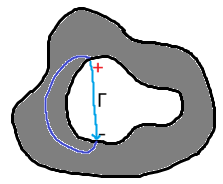

$\gdef\b#1{\boldsymbol{#1}}\gdef\d{\mathrm{d}}\gdef\p{\partial}\gdef\J{\mathbf{J}}\gdef\H{\mathbf{H}}\gdef\eps{\varepsilon}\gdef\i{\mathrm{i}}\gdef\unit#1{\,\mathrm{#1}}\gdef\re{\operatorname{Re}}\gdef\im{\operatorname{Im}}\gdef\e{\mathrm{e}}$
前言
普通物理一点都不普通。
本文适合非物竞但大概学过高中物理的同学看。
这个课是点名 $10\%$，作业 $30\%$，期中 $25\%$，期末 $35\%$，这次好像是点了两次，都在下半学期。
教材是费曼物理学讲义第二卷，会考的是 $1\sim8$、$10$、$13\sim18$、$20\sim24$。最后会用 Microwave Engineering (Pozar) 的第三章。作业很多都取自 Introduction to Electrodynamics (Griffiths)。
前置知识就是微积分，但其实没什么难度，知道 $\nabla$ 相关和 Stokes 公式的原理就行，第一节课会过一遍。上半学期只讲静电学的内容，包括库仑定律、高斯定律、电多极子、含导体情况的解法、静电能、电介质。下半学期讲剩余的内容，包括安培定律、毕奥—萨伐尔定律、磁矢势、磁偶极子、静磁能、法拉第电磁感应定律、麦克斯韦方程组、电磁波、交流电路、谐振腔、波导。期末会考上半学期中的电介质。
上课的 ppt 基本是照着教材写，讲也是照着讲。作为初学者，我经常会不明白为什么某个物理图景能用这个公式去刻画，或者没搞清楚讲的对象或（一些用于简化问题的）假设是什么，或者为什么突然要提这个例子。听过很多人说费曼物理学讲义其实不适合初学者，书里举的一些例子和内容的详略安排都是给完整学过一遍基础知识的人看的，视角比较高，为的是看到一些更本质的东西。
我的笔记里会尽量讲清一些例子它严谨的推理过程是怎样的，另外有一些例子比如涉及玻尔玆曼分布之类的，不会考。
建议从一开始就跟着进度看 Introduction to Electrodynamics。
作业平均六道，可能会放一道比较难的。
听说去年考试是期中巨难，今年是期中巨简单期末巨难，难到那种非物竞生容易不及格的那种。可以做好在若干节课和某次考试中心态爆炸的准备。当然过难肯定是会调分的。
关于考试的一些 tips：
- 复习基本公式的推导，与基本原理相关的一些例子，比如为什么导体表面越尖锐电荷密度越大。考试第一题是四个小简答题，会问这种。
- 简单的考试会出作业题或作业题改编。
- 需要练熟练度，强推。
- 保证会做的做对。
课上讲了但不考的知识点：
- 一些需要用到普物一知识的例子
- 推迟势
- 圆柱形谐振腔
课上没讲的一些知识点：
- 张量
- 狄拉克 $\delta$ 函数（记了）
- 调和函数
- 保角变换（记了）
- 介质中的电像法（期末）
- 磁标势
- 磁多极子（记了）
- 偶极子的受力
- 磁介质
- 含介质情况的麦克斯韦方程组
- 含介质情况的能量
- 平面波导、圆柱形波导
- 谐振腔和波导的能量耗散（期末）
- 能量密度（期末）
- 坡印廷矢量
- 电磁场的动量
- 电磁场的相对论变换及麦克斯韦方程组的相对论形式
- 真正解一般情况下的麦克斯韦方程组，例如一个匀速直线运动电荷引起的电磁场
有空多复习 ppt 和作业，多刷《大题典》，不要像我这样记太多笔记。
致谢
Huge thanks to mjy, zzy, lhz, psy, qkx. 感谢你们解答了我这么多傻逼问题。
第一节课
物理思想
数学和物理的差异：
牛顿力学和电磁学的视角的差异：
光的波粒二象性
浅灰色的是半透镜，透 $50\%$ 反 $50\%$。如果右上没有半透镜，那么两个光屏上各 $50\%$，这体现出光的粒子性（左下处 $50\%$ 向右，$50\%$ 向上）。如果右上有，那么会发生干涉，导致两个光屏的亮度不同（尽管和为 $100\%$）。
问题：第二个半透镜处的干涉是如何发生的？
答案。例如两束入射第二个半透镜的光线的振幅分别为 $\frac A{\sqrt{2}}\sin(\omega x+\varphi_1)$ 和 $\frac A{\sqrt{2}}\sin(\omega x+\varphi_2)$。那么两束出射光线就会是 $\frac A2[\sin(\omega x+\varphi_1)+\sin(\omega x+\varphi_2)]$ 和 $\frac A2[\sin(\omega x+\varphi_1+\pi)+\sin(\omega x+\varphi_2)]$，两者振幅分别为 $A\cos\frac{\varphi_1-\varphi_2}2$ 和 $A\sin\frac{\varphi_1-\varphi_2}2$，符合强度之和为 $A^2$ 的守恒性。
追问：两束相位差为 $\pi$ 的光干涉，不就违反能量守恒了吗？https://www.zhihu.com/question/525841505/answer/2424533220
场的数学描述
老问题：为什么场线（本质是积分曲线）的密度可以体现场强？
答：我们要明确的是，当我们说“场线越密场强越强”时，我们说的对象是“同一束场线”。
假设场是连续的。对于同一束场线，考虑它们所处的两个“截”曲面（实际上这个截面是无数条场线形成的，形成方法是每个点处的场线都是截面在该处切面的法向量），密度越密，截面面积越小，而因为是同一束场线，故通量相等，故场强越大。
练习：证明 $\nabla T(\b x_0)$ 与 $T(\b x_0)$ 所在的等高线（面）在 $\b x_0$ 处的切线（面）垂直。
事实上，$n-1$ 维超平面的法向量就是用 $\nabla$ 定义的，所以是弱智。
详细说一下，$T(\b x_0)$ 所在的等高线（面）$T(\b x)=T(\b x_0)$ 在 $\b x_0$ 处的切面，这个切面中的所有向量 $\Delta\b x$，它们都是形如“从 $\b x_0$ 出发往 $\b x_0$ 方向走，近似看来不会使 $T(\b x_0+\Delta x)$ 变化”，用数学语言说，就是 $\nabla T(\b x_0)\cdot\Delta\b x=0$。
矢量分析
基本定义
-
梯度（gradient）标量→矢量 $$ \nabla f=\left(\frac{\p f}{\p x},\frac{\p f}{\p y},\frac{\p f}{\p z}\right) $$
-
散度（divergence）矢量→标量 $$ \nabla\cdot\b F=\frac{\p\b F_x}{\p x}+\frac{\p\b F_y}{\p y}+\frac{\p\b F_z}{\p z} $$
-
旋度（curl）矢量→矢量 $$ \nabla\times\b F=\left(\frac{\p\b F_z}{\p y}-\frac{\p\b F_y}{\p z},\frac{\p\b F_x}{\p z}-\frac{\p\b F_z}{\p x},\frac{\p\b F_y}{\p x}-\frac{\p\b F_x}{\p y}\right) $$
-
通量（flux） $$ \Phi=\iint_S\b F\cdot\d\b s $$
-
环量（circulation） $$ \Gamma=\oint_L\b F\cdot\d\b l $$
当我们把 $\nabla$ 当作一个“向量算子”时，我们的依据是，点乘和叉乘在空间变换下形式不变，而与偏导相关的也是如此。
接下来，我们要做的，就是借助通量和环量的几何直观，证明散度和旋度的几何直观。
Stokes 公式相关
Gauss 公式
显然，一个大曲面的通量可以拆分成多个小曲面的通量之和。考虑一个极小立方体（左下角所处位置 $(x,y,z)$）。
两个 $yz$ 平面的通量为 $[\b F_x(x+\d x,y,z)-\b F_x(x,y,z)]\d y\d z$。
注意，这里 $x+\d x$ 和 $x$ 要区分，而 $y$、$z$ 不需要区分。
这个式子可以写成 $\frac{\p\b F_x}{\p x}\d x\d y\d z$。其余两个方向同理。
于是 $$ \oiint_S\b F\cdot \d\b s=\iiint_{V}\left(\frac{\p\b F_x}{\p x}+\frac{\p\b F_y}{\p y}+\frac{\p\b F_z}{\p z}\right)\d v=\iiint_V(\nabla\cdot\b F)\d v $$ 那么在一个实际的矢量场中，我们认为场的分布是连续的，那么我们认为一个点 $(x,y,z)$ 附近的每个点和它的性质是相近的，所以我们认为 $\Phi=VQ$，这里 $Q$ 就是我们希望得到的“体积流率”。对上式两侧除以 $V$ 并 $V\to 0$，得 $Q=\nabla\times\b F$。这就是散度的物理意义——一个点出流的量。
Green 公式 & Stokes 公式
同样，闭曲线的环量也可以拆分。先看二维情况，考虑一个极小正方形。
环量为 $(\b F_x(x,y)-\b F_x(x,y+\d y))\d x+(\b F_y(x+\d x,y)-\b F_y(x,y))\d y=\left(\frac{\p\b F_y}{\p x}-\frac{\p\b F_x}{\p y}\right)\d x\d y$。
于是有 $$ \oint_L\b F\cdot\d\b l=\iint_S\left(\frac{\p\b F_y}{\p x}-\frac{\p\b F_x}{\p y}\right)\d s $$ 那么对于三维的情况，如果只考虑 $xy$ 平面，那么得到的是旋度的 $z$ 方向（根据旋转方式—转轴的右手定则）。因此考虑另两维，就得到的完整的公式。对于理解“拆分维度分量”有困难的情况，我们可以这样考虑：一般化面积微元，设小块是两边为 $\b d_1,\b d_2$ 的平行四边形。环量为 $$ \begin{align*} &(\b F(\b x)-\b F(\b x+\b d_2))\cdot\b d_1+(\b F(\b x+\b d_1)-\b F(\b x))\cdot\b d_2\\ ={}&-(\nabla\cdot\b F_x\cdot\b d_2,\nabla\cdot\b F_y\cdot\b d_2,\nabla\cdot\b F_z\cdot\b d_2)\cdot\b d_1+(\nabla\cdot\b F_x\cdot\b d_1,\nabla\cdot\b F_y\cdot\b d_1,\nabla\cdot\b F_z\cdot\b d_1)\cdot\b d_2\\ ={}&-\b d_1\J_{\b F}\b d_2^\top+\b d_2\J_{\b F}\b d_1^\top\\ ={}&\sum\frac{\p\b F_i}{\p x_j}({\b d_2}_i{\b d_1}_j-{\b d_1}_i{\b d_2}_j)\\ ={}&\left(\frac{\p\b F_z}{\p y},\frac{\p\b F_x}{\p z},\frac{\p\b F_y}{\p x}\right)\cdot(\b d_1\times\b d_2)-\left(\frac{\p\b F_y}{\p z},\frac{\p\b F_z}{\p x},\frac{\p\b F_x}{\p y}\right)\cdot(\b d_1\times\b d_2)\\ ={}&(\nabla\times\b F)\cdot(\b d_1\times\b d_2) \end{align*} $$
而这个 $\b d_1\times\b d_2$ 就是面积向量。因此我们得到 $$ \oint_L\b F\cdot\d\b l=\iint_S(\nabla\times\b F)\cdot\d\b s $$ 同样，考虑不断缩小面积 $S$，就可以得到旋度的物理意义：一个点周围单位面积旋转的强度（这个强度是相对于转轴而言的，由旋度点乘转轴方向得到的，可以类比梯度），其中最强的就是与旋度同向的转轴。
无旋场
$$ \boxed{\nabla\times(\nabla f)=\b 0} $$
梯度的旋度等于 $0$，直觉，沿着某个方向增加的场不会侧向旋转。
换句话说，梯度场一定是无旋场。
接下来说明，无旋场一定是某个梯度场。
对于无旋场 $\b F$，它是路径无关的，因为由格林公式， $$ \oint_L\b F\cdot\d\b l=\iint_S(\nabla\times\b F)\cdot\d\b s=0 $$ 那么，构造函数 $f$： $$ f(\b x)=\int_{\b x_0}^{\b x}\b F\cdot\d\b l $$ 其中 $\b x_0$ 是任选的一个点。
这里，能用上下限的形式来表示大于一维空间的积分，其良定义性是由路径无关保证的。具体而言：
定义 $$ \int_{\b x_1}^{\b x_2}\nabla f\cdot\d\b l=\int_{\b x_1}^{\b x_2}\d f=f(\b x_2)-f(\b x_1) $$
现在，显然有 $\nabla f=\b F$（严格证明）。
另外，保守场意味着，任意回路的环量都是 $0$。由于回路可以任取，故必须要求 $\nabla\times\b F$ 处处为 $\b 0$。
一句话概括：梯度场 $\Longleftrightarrow$ 无旋场 $\Longleftrightarrow$ 保守场。
例 1
考虑静电场。这里，电场力就是上文的 $\b F$。
证明对于单个点电荷，其形成的电场无旋： $$ \b F=-\frac{kQ\b r}{|\b r|^3}\\ \frac{\p\b F_x}{\p y}=3kQ\frac{xy}{|\b r|^5}=\frac{\p\b F_y}{\p x} $$ 我们也可以从环路积分的角度验证它无旋。
那现在，我们就可以定义电势，这里定义的积分是 $\int_{\b x}^{无穷远处}$。得到 $$ \varphi=-\frac{kQ}{|\b r|} $$
无散场
$$ \boxed{\nabla\cdot(\nabla\times\b F)=0} $$
旋度的散度等于 0，直觉，旋转的场不会有起点和终点。可以从磁场的角度理解——磁感线一定是闭合的。
无散场有性质 $$ \oiint_S\b F\cdot\d\b s=\iiint_V(\nabla\cdot\b F)\d v=0 $$ 不是特别好用“保守”之类的说法描述。
然后无散场一定是某个矢量场的旋度（这样的一个旋度被称为矢量势能）。证明如下：
设 $\b F=\nabla\times\b f$。令 $\b f_z=0$。方程化为 $$ \left\{\begin{align*} -\frac{\p\b f_y}{\p z}&=\b F_x\\ \frac{\p\b f_x}{\p z}&=\b F_y\\ \frac{\p\b f_y}{\p x}-\frac{\p\b f_x}{\p y}&=\b F_z \end{align*}\right. $$ 所以可以取 $$ \left\{ \begin{align*} \b f_x&=\int_{z_0}^z\b F_y\d t_z+C_x(x,y)\\ \b f_y&=-\int_{z_0}^z\b F_x\d t_z+C_y(x,y) \end{align*} \right. $$ 代入最后一式，得 $$ -\int_{z_0}^z\left(\frac{\p\b F_x}{\p x}+\frac{\p\b F_y}{\p y}\right)\d t_z+\frac{\p C_y}{\p x}-\frac{\p C_x}{\p y}=\b F_z $$ 取 $C_x\equiv 0$，那么 $$ \begin{align*} \frac{\p C_y}{\p x}&=\b F_z+\int_{z_0}^z\left(\frac{\p\b F_x}{\p x}+\frac{\p\b F_y}{\p y}\right)\d t_z\\ &=\b F_z-\int_{z_0}^z\frac{\p\b F_z}{\p z}\d t_z\\ &=\left.\b F_z\right|_{z=z_0} \end{align*} $$ 这保证了 $C_y$ 与 $z$ 维无关，否则就无解了。
因此 $$ C_y(x,y)=\int_{x_0}^x\b F_z(t_x,y,z_0)\d t_x $$ 同时，任何 $f+\nabla C$ 都是解。
最后我们给出 Helmholtz decomposition：
任何一阶微分连续的向量场，都可以表示为一个无旋场和无散场的叠加。
常用公式
见 cheat sheet。
一些技巧
$$ \nabla\cdot(\b g\times\b f)=\nabla_{\b g}\cdot(\b g\times\b f)+\nabla_{\b f}\cdot(\b g\times\b f)=\b f\cdot(\nabla\times\b g)-\b g\cdot(\nabla\times\b f)\\ \nabla\times(\b g\times\b f)=\nabla_{\b g}\times(\b g\times\b f)+\nabla_{\b f}\times(\b g\times\b f)=(\b f\cdot\nabla)\b g-(\nabla\cdot\b g)\b f+(\nabla\cdot\b f)\b g-(\b g\cdot\nabla)\b f $$
遇到 $\nabla\circ(\b f_1\circ\b f_2)$ 形式，其展开式中，每个单项式都形如 $$ \frac{\p({\b f_1}_i{\b f_2}_j)}{\p x_k} $$ 因此它一定能拆成两个只对其中一个项求偏导之和的形式。因此上文中 $\nabla_{\b g}$、$\nabla_{\b f}$ 的意思就是说，“碰到 $\b g/\b f$ 才偏导，另一个直接数乘”。这个方便记忆，推导不是很正规。
关于求电场和电势，各有三种方法：① 直接积分；② 高斯定律+对称性；③ $-\nabla\varphi$。① 直接积分；② $\nabla^2\varphi=-\rho/\eps_0$；③ $\int\b E$。
曲线坐标系相关
当时我在看这个的时候很困惑，其实只需要明确几点原则就行：曲线坐标系里的向量是有起点的，不是平移不变的。向量坐标直接运算是没有意义的，因此（除非起点为原点，这时向量就表示位置）向量的终点也没有意义，只是表示朝向和大小。曲线坐标系里分基向量和单位基向量。各处的基向量不同。这个课里只考虑各单位向量均互相垂直的坐标系，包括极坐标系、柱坐标系、球坐标系。
接下来以球坐标系 $\rho\theta\phi$ 为例。
对于一个位置 $\b r$，定义各基向量为 $$ \b e_i=\frac{\p\b r}{\p x_i} $$ 其中 $x_i$ 表示某维。对于具体情况一般习惯写 $\b e_\rho$、$\b e_\theta$、$\b e_\phi$ 或 $\b\rho$、$\b\theta$、$\b\phi$。
定义单位基向量为单位化的基向量。基向量的模长称为拉梅系数 $h_i$。单位基向量写作 $\b{\hat e}_\rho$ 等或 $\b{\hat\rho}$ 等。这篇笔记里我们统一把单位基向量写成后面这种，包括直角坐标系。
在球坐标系中，$h_\rho=1$，$h_\theta=\rho$，$h_\phi=\rho\sin\theta$。“定义”全微分 $$ \d\b r=\b\rho\d\rho+\b\theta\d\theta+\b\phi\d\phi=\b{\hat\rho}h_\rho\d\rho+\b{\hat\theta}h_\theta\d\theta+\b{\hat\phi}h_\phi\d\phi $$ 求各种微分形式（这个词能这么用吗…）的球面坐标表示，可以把直角坐标系的表达式用坐标变换公式转过去，期间用多元函数的链式求导法则把 $/\p x$ 变成 $/\p\rho$ 等。一个更直接的方法就是，我们知道，比如说 $$ \nabla f\cdot\b{\hat\phi}=\frac{\nabla f\cdot\b\phi}{h_\phi}=\frac1{h_\phi}\frac{\p f}{\p\phi} $$ 第二个等号是因为梯度的定义。所以 $$ \nabla=\frac{\b{\hat\rho}}{h_\rho}\frac{\p}{\p\rho}+\frac{\b{\hat\theta}}{h_\theta}\frac{\p}{\p\theta}+\frac{\b{\hat\phi}}{h_\phi}\frac{\p}{\p\phi} $$ 其实基于各基向量垂直，这个是很直观的。
求散度、旋度这些，一种思路是，还是像上面这样，但是注意到 $\p{\b{\hat x}_i}/\p x_j$ 这种东西的结果不是 $\b 0$。通过转直角坐标系求出它们之后就简单了。
所以为什么三种 $\nabla$ 都可以用这个式子呢？或者应该问为什么 $\nabla$ 在不同坐标系下有某个不变性呢？
看到过有同学用更简洁的方法推 $\nabla^2$，好像是用的一些更高端的方法。
静电学的基本公式
电势的思想略，这边默认会高中的内容。
高斯定律
$$ \left\{\begin{align*} \nabla\cdot\b E&=\frac{\rho}{\eps_0}\\ \nabla\times\b E&=-\frac{\p\b B}{\p t}\\ \nabla\cdot\b B&=0\\ \nabla\times\b B&=\mu_0\b j+\mu_0\eps_0\frac{\p\b E}{\p t} \end{align*}\right. $$
当 $\b E$ 和 $\b B$ 都是恒定时，方程变为 $$ \left\{\begin{align*} \nabla\cdot\b E&=\frac{\rho}{\eps_0}\\ \nabla\times\b E&=0\\ \nabla\cdot\b B&=0\\ \nabla\times\b B&=\mu_0\b j \end{align*}\right. $$ 于是电磁场就分开了。
$\rho$（电荷密度）确定了 $\Rightarrow$ 散度和旋度都确定了 $\Rightarrow$ 电场确定了（除了加常数，说明）
电荷是量子化的——油滴实验
电场是保守场，这个和 $\nabla\times\b E=\b 0$ 对应，这意味着，单个点电荷的电场一定是与 $\b r$ 共线的。虽然如此，具体的强度（平方反比）没有要求，因此还需要另一个方程。为什么说 $\nabla\cdot\b E=\rho/\eps_0$ 限制了平方反比呢？考虑圆心上有个点电荷的球面： $$ \Phi=\oiint_S\b E\d\b s=4\pi r^2\cdot\frac{q}{4\pi\eps_0r^2}=\frac{q}{\eps_0} $$ 只有平方，才能使电通量与球半径无关。诶，可以类比光通量。
库仑定律（$\b F=\frac{1}{4\pi\eps_0}\frac{q_1q_2}{|\b r|^3}\b r$）和叠加定律，和麦克斯韦方程组的前两个可以互推。
这里 $\eps_0\approx 8.85\times 10^{-12}\unit{C^2/(N\cdot m^2)}$ 是真空的介电常数。注意量纲！
推导
关键式子：对于 $\b r\ne\b r_0$， $$ \nabla\cdot\frac{\b r-\b r_0}{|\b r-\b r_0|^3}=\frac{\nabla\cdot(\b r-\b r_0)}{|\b r-\b r_0|^3}+(\nabla\frac{1}{|\b r-\b r_0|^3})\cdot(\b r-\b r_0)=\frac{3}{|\b r-\b r_0|^3}-\frac{3(\b r-\b r_0)\cdot(\b r-\b r_0)}{|\b r-\b r_0|^5}=0\\ \nabla\times\frac{\b r-\b r_0}{|\b r-\b r_0|^3}=\frac{\nabla\times(\b r-\b r_0)}{|\b r-\b r_0|^3}+(\nabla\frac{1}{|\b r-\b r_0|^3})\times(\b r-\b r_0)=\b 0+\frac{3(\b r-\b r_0)\times(\b r-\b r_0)}{|\b r-\b r_0|^5}=\b 0 $$
（有些书里会管 $\b r-\b r^\prime$ 叫花体的 r）
库仑定律 $+$ 叠加定律 $\Rightarrow$ 高斯定律积分形式：（$V^\prime\subseteq V$，$B_\eps(\cdot)$ 是球，$S_\eps(\cdot)$ 是球面） $$ \begin{align*} \Phi(V^\prime)&=\oiint_{\p V^\prime}\b E(\b r)\cdot\d\b s\\ &=\oiint_{\p V^\prime}\iiint_{V}\frac{\rho(\b r^\prime)\d v}{4\pi\eps_0}\cdot\frac{\b r-\b r^\prime}{|\b r-\b r^\prime|^3}\cdot\d\b s\\ &=\oiint_{\p V^\prime}\iiint_{V^\prime}\frac{\rho(\b r^\prime)\d v}{4\pi\eps_0}\cdot\frac{\b r-\b r^\prime}{|\b r-\b r^\prime|^3}\cdot\d\b s\\ &+\oiint_{\p V^\prime}\iiint_{V\setminus V^\prime}\frac{\rho(\b r^\prime)\d v}{4\pi\eps_0}\cdot\frac{\b r-\b r^\prime}{|\b r-\b r^\prime|^3}\cdot\d\b s\\ &=\iiint_{V^\prime}\frac{\rho(\b r^\prime)\d v}{4\pi\eps_0}\oiint_{\p V^\prime}\frac{\b r-\b r^\prime}{|\b r-\b r^\prime|^3}\cdot\d\b s\\ &+\iiint_{V^\prime}\d v^\prime\boxed{\nabla\cdot\iiint_{V\setminus V^\prime}\frac{\rho(\b r^\prime)\d v}{4\pi\eps_0}\cdot\frac{\b r-\b r^\prime}{|\b r-\b r^\prime|^3}}_{=0}\\ &=\iiint_{V^\prime}\frac{\rho(\b r^\prime)\d v}{4\pi\eps_0}\left(\boxed{\oiint_{\p(V^\prime\setminus B_\delta(\b r^\prime))}\frac{\b r-\b r^\prime}{|\b r-\b r^\prime|^3}\cdot\d\b s}_{=0}+\oiint_{S_\delta(\b r^\prime)}\frac{\b r-\b r^\prime}{|\b r-\b r^\prime|^3}\cdot\d\b s\right)\\ &=\iiint_{V^\prime}\frac{\rho(\b r^\prime)\d v}{4\pi\eps_0}\oiint_{S_\delta(\b r^\prime)}\frac{\d\b n}{\delta^2}\\ &=\iiint_{V^\prime}\frac{\rho(\b r^\prime)}{\eps_0}\d v \end{align*} $$ 高斯定律积分形式 $\Rightarrow$ 高斯定律微分形式： $$ \iiint_{V^\prime}\nabla\cdot\b E(\b r)\d v=\oiint_{\p V^\prime}\b E(\b r)\cdot\d\b s=\iiint_{V^\prime}\frac{\rho(\b r^\prime)}{\eps_0}\d v\\ \Downarrow\\ \nabla\cdot\b E=\frac{\rho}{\eps_0} $$
高斯定律 $\Rightarrow$ 库仑定律：太简单了。注意空间中不能弥漫着一个常数矢量的电场，否则就违反了球面对称性。
库仑定律 $+$ 叠加定律 $\Rightarrow$ 无旋性质：这里我们就只推单点电荷的了。（以下，$S$ 是包含 $\b r_0$ 的任意曲面） $$ \begin{align*} &\oint_{\p S}\b E(\b r)\cdot\d\b l\\ ={}&\boxed{\iint_{S\setminus B_\delta(\b r_0)}(\nabla\times\b E(\b r))\cdot\d\b s}_{=0}+\oint_{\p(S\cap B_\delta(\b r_0))}\b E(\b r)\cdot\d\b l\\ ={}&\oint_{S\cap S_\delta(\b r_0)}\frac{q}{4\pi\eps_0}\frac{\boxed{(\b r-\b r_0)\cdot\d\b l}_{=0}}{|\b r-\b r_0|^3}\\ ={}&0 \end{align*} $$
这个利用的是球面上的切向量与径向量垂直。然后再比对：
$$
0=\oint_{\p S}\b E(\b r)\cdot\d\b l=\iint_S(\nabla\times\b E(\b r))\cdot\d\b s
$$
这看起来像废话，如果把单个电荷换成连续分布的电荷密度就显得不是废话了，我只是懒得写了。
最后提一句，高斯定律必须在有界区域上用，不然你考虑一个点电荷的球邻域的补，它就爆了。
狄拉克 δ 函数
我们注意到，上面的推导核心思路是这样的：
利用 Stokes 公式家庭在两个维数之间转化，充分利用关键式子，将与中心相离的部分扔掉，剩下中心的一个球形邻域，利用球的性质直接搞掉。最后再利用 Stokes 公式家庭，比对两个积分式，得出微分形式的结果。
这里我们逃不开比对，有什么好的方法吗？我们要引入狄拉克 $\delta$ 函数。
这里最关键的两个事是：
$$ \begin{align*} &\forall a<b\in\R\cup\set{\pm\infty}\setminus\set{0},\lim_{n\to\infty}\int_a^b\delta_n(x)\d x=[0\in(a,b)]\\ \Longrightarrow{}&\forall f\in C(\R),\lim_{n\to\infty}\int_{-\infty}^{+\infty}\delta_n(x)f(x)=f(0) \end{align*} $$
当我们说一个玩意 $*$ 等于 $\delta(x)$ 之类的东西的时候，我们本质上在说的是存在一种通过狄拉克 $\delta$ 函数列逼近 $*$ 的方式。
所以说回来，之所以 $$ \nabla\cdot\left(\frac{\b{\hat r}}{r^2}\right)=4\pi\delta^3(\b r) $$ （这里 $\b{\hat r}$ 指被单位化过的 $\b r$）是因为我们存在一系列，例如说 $$ \left\{{\frac{4}{3}\pi\delta_i^3f_i(\b x)=\iiint_{B_{\delta_i}(\b x)}\nabla\cdot\left(\frac{\b{\hat r}}{r^2}\right)\d v=\oiint_{S_{\delta_i}(\b x)}\frac{\b{\hat r}}{r^2}\cdot\d\b s=\big([|\b x|<\delta_i]+[|\b x|\le\delta_i]\big)2\pi}\right\} $$ （其中 $\set{\delta_i}$ 趋近于 $0$）这样的函数列 $\set{f_i(\b x)}$，它一方面趋近于 $\nabla\cdot(\b{\hat r}/r^2)$，一方面符合狄拉克 $\delta$ 函数列的定义的三次方 $4\pi$ 倍，于是就可以画上一个等号，意思是说 $\nabla\cdot(\b{\hat r}/r^2)$ 的行为和一般的狄拉克 $\delta$ 函数类似，能够替换。注意 $\delta^3(\b r)=\delta(x)\delta(y)\delta(z)$。
这时， $$ \begin{align*} \nabla\cdot\b E(\b r)&=\iiint_V\frac{\rho(\b r^\prime)\d v}{4\pi\eps_0}\left(\nabla\cdot\frac{\b r-\b r^\prime}{|\b r-\b r^\prime|^3}\right)\\ &=\iiint_V\frac{\rho(\b r^\prime)\d v}{\eps_0}\delta^3(\b r-\b r^\prime)\\ &=\frac{\rho(\b r^\prime)}{\eps_0} \end{align*} $$
这个时候你会感觉，我好像说了很多，但好像又什么也没说。这里的问题在于，不平凡的推导部分本质上是 狄拉克 $\delta$ 函数的常规定义（其他地方（积分）趋近于 $0$，整个积分（趋近于）为 $1$）$\Longrightarrow$ 它的卷积“萃取”性质。但这个我不会证（悲）
但是在这里具体的情况下还是可以证的： $$ \nabla\cdot\b E(\b r)=\lim_{\delta\to 0^+}\left[\boxed{\iiint_{V\setminus B_\delta(\b r)}\frac{\rho(\b r^\prime)\d v}{4\pi\eps_0}\left(\nabla\cdot\frac{\b r-\b r^\prime}{|\b r-\b r^\prime|^3}\right)}_{=0}+\nabla\cdot\iiint_{B_\delta(\b r)}\frac{\rho(\b r^\prime)\d v}{4\pi\eps_0}\frac{\b r-\b r^\prime}{|\b r-\b r^\prime|^3}\right] $$ 注意，这里 $\nabla$ 并非对 $B_\delta(\b r)$、$\rho(\b r)$、$(\b r-\b r^\prime)/|\b r-\b r^\prime|^3$ 这三者都求导，只是对最后一个求。如果要都求会导致 $\rho$ 提不出来。
由于 $\rho$ 是连续函数，故在 $B_{\delta}(\b r)$ 上一致连续，把这个连续和左边 $\lim$ 的 $\eps-\delta$ 定义写开来搞一搞，可以得到 $$ \begin{align*} \nabla\cdot\b E(\b r)&=\frac{\rho(\b r)}{4\pi\eps_0}\lim_{\delta\to 0^+}\left(\nabla\cdot\iiint_{B_\delta(\b r)}\frac{\b r-\b r^\prime}{|\b r-\b r^\prime|^3}\d v\right)\\ &=\frac{\rho(\b r)}{4\pi\eps_0}\lim_{\delta\to 0^+}\left(\iiint_{B_\delta(\b r)}\nabla_{\b r}\cdot\frac{\b r-\b r^\prime}{|\b r-\b r^\prime|^3}\d v\right)\\ &=-\frac{\rho(\b r)}{4\pi\eps_0}\lim_{\delta\to 0^+}\left(\iiint_{B_\delta(\b r)}\nabla_{\b r^\prime}\cdot\frac{\b r-\b r^\prime}{|\b r-\b r^\prime|^3}\d v\right)\\ &=-\frac{\rho(\b r)}{4\pi\eps_0}\lim_{\delta\to 0^+}\oiint_{S_\delta(\b r)}\frac{\b r-\b r^\prime}{|\b r-\b r^\prime|^3}\cdot\d\b s\\ &=-\frac{\rho(\b r)}{4\pi\eps_0}(-4\pi)=\frac{\rho(\b r)}{\eps_0} \end{align*} $$ 写完上式后，我不禁开始问自己，在处理这种无穷的时候，我们本质上在做什么？就是在积分时把未定义点抠掉。这个抠掉并不会影响结果，但并不能因此就说，我们可以利用 $\nabla\cdot(\b{\hat r}/r^2)=0$ 把整个式子都化成零，因为 $\nabla$，求导，它是一个极限过程。尽管极限过程中不断有邻域外的部分贡献变为 $0$，但邻域内永远是有贡献的。那这里我们发现这个贡献恒为 $4\pi$。所以严谨地来说，这里的积分区域应当去掉 $\set{\b r}$，然后 $\nabla$ 不能直接换进积分里，只能在外面展开成 $\lim$。狄拉克 $\delta$ 函数，其实就是在允许 $\nabla$ 换进积分的同时，保证极限过程不丢。于是其实可以这样严谨地写： $$ \begin{align*} \nabla\cdot\b E(\b r_0)&=\lim_{\delta\to 0^+}\frac{3}{4\pi\delta^3}\iiint_{B_\delta(\b r_0)}\nabla\cdot\b E(\b r)\d v\\ &=\lim_{\delta\to 0^+}\frac{3}{4\pi\delta^3}\oiint_{S_\delta(\b r_0)}\b E(\b r)\cdot\d\b s\\ &=\lim_{\delta\to 0^+}\frac{3}{4\pi\delta^3}\oiint_{S_\delta(\b r_0)}\iiint_V\frac{\rho(\b r^\prime)\d v}{4\pi\eps_0}\cdot\frac{\b r-\b r^\prime}{|\b r-\b r^\prime|^3}\cdot\d\b s\\ &=\lim_{\delta\to 0^+}\frac{3}{4\pi\delta^3}\iiint_V\frac{\rho(\b r^\prime)\d v}{4\pi\eps_0}\oiint_{S_\delta(\b r_0)}\frac{\b r-\b r^\prime}{|\b r-\b r^\prime|^3}\cdot\d\b s\\ &=\lim_{\delta\to 0^+}\frac{3}{4\pi\delta^3}\iiint_{B(\b r_0,\delta)}\frac{\rho(\b r^\prime)\d v}{\eps_0}\\ &=\lim_{\delta\to 0^+}\frac{3\rho(\b r_0)}{4\pi\delta^3}\iiint_{B(\b r_0,\delta)}\frac{\d v}{\eps_0}\\ &=\frac{\rho(\b r_0)}{\eps_0} \end{align*} $$ 所以说相比积分形式，微分形式就是多了个取极限，多了个利用连续性把 $\rho(\cdot)$ 提出来的操作。
同样的，旋度也可以用极限的方式来考虑。但是旋度不一样的地方在于，它涉及两个形式对称的导数的差，所以就是严格的 $0$。
题外话
如何构造一个电场，使得一个正电荷在一处稳定平衡？
这样一个电场直觉上，任何包含正电荷的封闭面，电通量都得是负的，这说明这个正电荷处本身得有个负电荷！
但是交变电场是可以的，离子阱。
如果我们在八个顶点 $(\pm1,\pm1,\pm1)$ 放等量电荷，那么电场为： $$ \b E=\frac{q}{4\pi\eps_0}\sum_{\b x_0}\frac{\b x-\b x_0}{|\b x-\b x_0|^3} $$
$$ \frac{\p\b E_i}{\p x_i}=\frac{q}{4\pi\eps_0}\sum_{\b x_0}\left(\frac{1}{|\b x-\b x_0|^3}-\frac{3(\b x_i-{\b x_0}_i)^2}{|\b x-\b x_0|^5}\right) $$
$$ \frac{\p\b E_i}{\p x_j}=-\frac{q}{4\pi\eps_0}\sum_{\b x_0}\frac{3(\b x_i-{\b x_0}_i)(\b x_j-{\b x_0}_j)}{|\b x-\b x_0|^5} $$
显然 $\b E|_{\b x=\b 0}=\b 0$，但是 $$ \left.\frac{\p\b E_i}{\p x_i}\right|_{\b x=\b 0}=\left.\frac{\p\b E_i}{\p x_j}\right|_{\b x=\b 0}=0 $$ （额，怎么爆了啊）
别急，我们有 $$ \left.\frac{\p^3\b E_i}{\p x_i^3}\right|_{\b x=\b 0}=\frac{224}{27\sqrt3} $$ 也就是说 $\varphi$ 在坐标轴方向的一、二、三阶偏导都是 $0$，而四阶 $<0$，所以它至少不是极小值点。所以这是不能稳定的。
但是，如果我们将电荷限制在一个平面内，四个角摆上电荷，那么 $$ \left.\frac{\p\b E_i}{\p x_i}\right|_{\b x=\b 0}=-\frac{1}{\sqrt2},\;\left.\frac{\p\b E_i}{\p x_j}\right|_{\b x=\b 0}=0 $$ 这就说明 $\H_\varphi(\b 0)>0$，而且 $\varphi_{xx}(\b 0)>0$，从而可以稳定。
这个事情说明，二维和三维是有本质区别的，不能把电学问题放到二维去看。
例 1
高斯定律应用于一些常见的构形。可以记一下。
无限长导线：显然 $\b E\parallel \b d$。做一个半径为 $d$，高为 $l$ 的圆柱。 $$ 2\pi dl\cdot E=\frac{l\lambda}{\eps_0}\Rightarrow E=\frac{\lambda}{2\pi\eps_0d} $$ 无限大平面：显然 $\b E\parallel\b d$。做一个以带点平面为对称面的，高为 $2d$，底面积为 $S$ 的柱体。 $$ 2S\cdot E=\frac{S\sigma}{\eps_0}\Rightarrow E=\frac{\sigma}{2\eps_0} $$ 半径为 $r$ 的球：显然 $\b E\parallel\b d$（这里 $\b d=\overrightarrow{OP}$）。 $$ 4\pi d^2\cdot E=\frac{\rho\frac{4}{3}\pi\min(d,r)^3}{\eps_0}\Rightarrow E=\frac{\rho\min(d,r)^3}{3\eps_0d^2}=\left\{\begin{align*}&\frac{\rho d}{3\eps_0},&d\le r\\ &\frac{\rho r^3}{3\eps_0d^2},&d>r\end{align*}\right. $$ 半径为 $r$ 的球壳： $$ E=\left\{\begin{align*}&0,&d<r\\ &\frac{\sigma r^2}{2\eps_0d^2}m,&d=r\\ &\frac{\sigma r^2}{\eps_0d^2},&d>r\end{align*}\right. $$
这里值得提的一点是，对于一个无限大平面，平面内的场强为 $\b 0$。我们最好避免高斯面和带电平面有测度非零的交，不然会出现奇怪的问题。可以参见后面导体情况的讨论。
有多个平面的结构，会出现高斯定理给出的方程不够用的情况，这是要加个对称性的方程。
电偶极子
分析思路
考虑两个分别处于 $(0,0,\pm d/2)$ 的，带电量相反 $\pm Q$ 的点电荷，然后考虑较远处的电势。
法 1：直接泰勒展开硬展。 $$ \begin{align*} \varphi&=\frac{Q}{4\pi\eps_0}\left(\frac{1}{\sqrt{R^2+d^2/4-Rd\cos\theta}}-\frac{1}{\sqrt{R^2+d^2/4+Rd\cos\theta}}\right)\\ &=\frac{Q}{4\pi\eps_0R}\left(1+\frac{\cos\theta}{2}\frac{d}{R}-1+\frac{\cos\theta}{2}\frac{d}{R}+\omicron\left(\frac dR\right)\right)\\ &\approx\frac{Qd\cos\theta}{4\pi\eps_0R^2} \end{align*} $$ 法 2：我们可以把 $r_+$ 估成 $R-(d/2)\cos\theta$，把 $r_-$ 估成 $R+(d/2)\cos\theta$。据说可以通过几何方法证明这样只会和真正的值差高阶小量。然后 $$ \frac{1}{r_+}=\frac{1/R}{1-(d/2R)\cos\theta}=\frac1R\left(1+\frac{d}{2R}\cos\theta+\omicron\left(\frac{d}{2R}\right)\right) $$ 于是同样就得出上面那个式子。
然后考虑 $\cos\theta$ 的几何意义——实际上就是（负电荷到正电荷的向量）和 $\overrightarrow{OP}$ 的夹角。如果我们把前者和 $Q$ 的积称为 $\b p$（偶极矩）的话，就可以得到（这里开始 $R$ 相关的全部小写了）： $$ \b p=Qd\b{\hat z}\\ \varphi=\frac{\b p\cdot\b r}{4\pi\eps_0r^3}\\ \b E=\frac{1}{4\pi\eps_0}\left(\frac{3(\b p\cdot\b r)\b r}{r^5}-\frac{\b p}{r^3}\right) $$
法 3：一开始正负电荷都在原点，对于正电荷来说， $$ \varphi_0=\frac{1}{4\pi\eps_0r} $$ 考虑正电荷向上移动了 $\Delta z=d/2$。那么 $$ \Delta\varphi^+=\frac{\p\varphi_0}{\p z}(-\Delta z) $$ 同理 $$ \Delta\varphi^-=\frac{\p(-\varphi_0)}{\p z}\Delta z $$ 因此 $$ \Delta\varphi=-\frac{\p\varphi_0}{\p z}d=-\frac{\p}{\p z}\frac{Q}{4\pi\eps_0r}d=\frac{Qdz}{4\pi\eps_0r^3}=-\frac{1}{4\pi\eps_0}\b p\cdot\left(\nabla\frac{1}{r}\right) $$ 电四极子是电偶极子再求导。一种“离散”的电四极子的推导：
假设中心是 $O$，然后这个在 $xy$ 平面上，边长为 $l$。先考虑单个沿 $y$ 轴的电偶极子 $$ \varphi^{(1)}(\b r)=\frac{ql}{4\pi\eps_0}\cdot\frac{y}{r^3} $$ 然后往两边“分裂” $$ \Delta\varphi_+^{(1)}(\b r)=\Delta\varphi_-^{(1)}(\b r)=-\frac{\p\varphi(\b r)}{\p x}\left(\frac{l}{2}\right)=\frac{3ql^2xy}{8\pi\eps_0r^5} $$ 于是 $$ \varphi^{(2)}(\b r)=\frac{3ql^2xy}{4\pi\eps_0r^5} $$
电势的多级展开
回顾多元函数的泰勒展开： $$ f(\b x)=\sum_{i=0}^n\sum_{\sum c_j=i}\frac{1}{\prod c_j!}\cdot\frac{\p^i f}{\p x_j^{c_j}}(\b x_0)\cdot\prod(x_j-{x_0}_j)^{c_j}+\omicron(\lVert\b x-\b x_0\rVert^n) $$ 现在考虑在原点附近，一块小的有电荷的区域（不能视作点电荷），对较远处一点 $\b r$ 所造成的电势 $$ \varphi(\b r)=\frac{1}{4\pi\eps_0}\iiint_{V}\frac{\rho(\b r^\prime)\d v}{|\b r-\b r^\prime|} $$ 如果区域不在原点附近，考虑任取其中一点 $\b r_0$，然后 $1/|\b r-\b r^\prime|$ 变成 $1/|(\b r-\b r_0)-(\b r^\prime-\b r_0)|$ 之后也是一样的，后面不讨论。
泰勒展开当然不能直接用于 $\b r$ 啊，那就考虑在 $\b r$ 处展开 $f(\b x)=1/|\b x|$ 吧： $$ f(\b r-\b r^\prime)=\frac{1}{|\b r|}-\sum_{i=1}^3\frac{\p\frac{1}{|\b r|}}{\p x_i}\b r^\prime_{i}+\frac{1}{2}\sum_{i=1}^3\sum_{j=1}^3\frac{\p^2\frac{1}{|\b r|}}{\p x_i\p x_j}\b r^\prime_i\b r^\prime_j-\cdots $$ 将积分写进来，就得到 $$ \begin{align*} 4\pi\eps_0\varphi(\b r)&=\frac{1}{|\b r|}\iiint_V\rho(\b r^\prime)\d v-\sum_{i=1}^3\frac{\p\frac{1}{|\b r|}}{\p x_i}\iiint_{V}\b r^\prime_{i}\rho(\b r^\prime)\d v+\frac{1}{2}\sum_{i=1}^3\sum_{j=1}^3\frac{\p^2\frac{1}{|\b r|}}{\p x_i\p x_j}\iiint_V\b r^\prime_i\b r^\prime_j\rho(\b r^\prime)\d v-\cdots\\ &=\frac{Q}{|\b r|}-\left(\nabla\frac{1}{|\b r|}\right)\cdot\iiint_V\b r^\prime\rho(\b r^\prime)\d v+\frac{1}{2}\H_{1/|\b r|}:\iiint_V\b r^\prime\otimes\b r^\prime\rho(\b r^\prime)\d v-\cdots \end{align*} $$ 这里我们管 $$ \b p=\iiint_V\b r^\prime\rho(\b r^\prime)\d v $$ 叫电偶极矩。可以这样理解：在计算第一项 $Q/|\b r|$ 后，我们考虑了净电荷，但是没考虑这些电荷的空间分布。那么第二项就是对于每个 $\b r^\prime$，把它对应的电荷量 $\rho(\b r^\prime)\d v$ 从原点减去，然后加到它本身来，那么单个这样的东西就是我们上面说的电偶极子，全部积分起来也可以认为是。当然这一步的估算仍然是有误差的，但是电四极矩在展开式中几何意义我就不太会解释了。
当我们在说一个系统的电偶极矩时，就有两个点需要注意：
- 它的净电荷不等于 $0$，也可以有电偶极矩，即把它的电荷强制加成零之后再算。
- 电偶极矩的方向和大小取决于原点的选择，或者说零阶项部分视作点电荷的位置。
二阶项中的那个积分对应电四极矩是个张量 $$ \b D_{ij}=\iiint_V(3\b r_i\b r_j-\delta_{ij}\b r^2)\rho(\b r)\d v $$ 也就是说展开式中这项一般会写成 $\frac{1}{6}\H:\b D$。
至于为什么在上面添油加醋，我也不知道，但是似乎有个相关的东西说明这个形式比较好，就是说，如果电荷分布是球面对称的，那么二阶项为零。
如果 $\rho(\b r)=\rho(r)$，那么 $i\ne j$ 的部分直接可以变成零，而 $i=j$ 的部分有 $$ \left\{ \begin{align*} &\b D_{11}=\b D_{22}=\b D_{33}\\ &\b D_{11}+\b D_{22}+\b D_{33}=0 \end{align*} \right. $$ 所以三者也各自等于 $0$。
至于更后面的项，尽管知道它的表达式，但对更具体的东西（比如电八极矩该怎样添油加醋，或者 $\nabla^k(1/|\b r|)$ 该怎么算之类的），我就不太清楚了。
最后给出 $$ \H_{1/r}=\frac{1}{r^5}\begin{bmatrix}3x^2-r^2&3xy&3xz\\ 3xy&3y^2-r^2&3yz\\ 3xz&3yz&3z^2-r^2\end{bmatrix} $$ $\b D$ 会不会模仿的就是这个东西呢？
含导体的情况
在静电平衡时，导体内部是有自由电荷的，只不过电势为零，电场强度为零，净电荷为零。只有表面有净电荷，且表面的电场强度垂直于表面。无论是内部场强非零，还是表面不垂直，都会导致自由电荷的移动。
考虑导体时，内侧合场强为 $0$，根据高斯定理，外侧合场强为 $\sigma/\eps_0$，因此表面上的合场强为 $\sigma/2\eps_0$。如何理解呢？可以这样想：挖去当前点附近的一小块表面，这个时候，无论时内、上、外，只要足够近，它们的场强都是相等的。然后再拼上这一块，把这一块当作一个无限大带电 $\sigma$ 的平面即可。所以可以列出两个方程，解出导体表面的场强。
如果导体是个空腔，那么：
-
考虑取一个实心部分内的，绕空腔的高斯面，得到内表面净电荷为零。
-
如何得到内表面电荷处处为零呢？考虑如果不是的话，必能找到一条电场线，然后这么搞：
 与无旋矛盾。
-
同样，空腔内电场处处为零，否则用 2 的方法也可以搞出矛盾。
为什么表面尖的地方电荷密度大？简而言之，考虑一个简单情况：一大一小的导体球相离充分远但被导线连接。这个也可以用于解释导体球相碰时的电荷分配。
电容
$C=Q/U$。
平行板电容器，$U=Ed=\sigma d/\eps_0$ 故 $C=\sigma S/U=\eps_0S/d$。
同轴柱形电容器，根据高斯定律，$E=\lambda/2\pi\eps_0r$（无所谓内层是实心还是空心），$U=\lambda/2\pi\eps_0\cdot\ln(r_2/r_1)$，$C=l\lambda/U=2\pi\eps_0l/\ln(r_2/r_1)$。
唯一性定理
- 已知源电荷分布。
- 导体表面等势。
能否确定导体表面的电荷分布？
唯一性定理：对于区域 $V$，如果内部的电荷分布已知，且 ① $\p V$ 上的势能分布已知；或 ② $\p V$ 上的电场垂直分量已知；则 $V$ 内的电场唯一确定。
证：若有两种电势分布 $\varphi_1$、$\varphi_2$，令 $U=\varphi_1-\varphi_2$。第一，我们知道 $\nabla^2 U=\rho/\eps_0-\rho/\eps_0=0$；第二，上面两个条件可以翻译为 $U|_{\p V}=0$ 或 $(\p U/\p n)|_{\p V}=0$，我们可以把它写成 $$ U\frac{\p U}{\p n}=0 $$ 积分 $$ 0=\oiint_{\p V}U\frac{\p U}{\p n}\d s=\oiint_{\p V}U(\nabla U)\cdot\d\b s=\iiint_V\nabla\cdot(U\nabla U)\d v=\iiint_V(\nabla U)^2\d v+\iiint_VU(\nabla^2 U)\d v=\iiint_V(\nabla U)^2\d v $$ 于是 $\nabla U=0$。
注意：这里这个区域可以是无界的，至于为什么有的必须有界有的可以无界，我也不知道。似乎是整个空间净电荷为零的时候才可以无界？
推论：对于区域 $V$，如果在上述唯一性定理的条件基础上，$V$ 中还被抠了一些洞，每个洞对应一个导体，我们既不知道这个导体表面的电势，又不知道导体表面的场强，但是知道导体的净电荷，那么 $V$ 内的电场也能唯一确定。
证：这些导体的电势是定值，于是 $$ \iiint_{\p V_i}U\frac{\p U}{\p n}\d s=U_i\iiint_{\p V_i}(\b E_1\cdot\d\b s-\b E_2\cdot\d\b s)=U_i\left(\frac{Q}{\eps_0}-\frac{Q}{\eps_0}\right)=0 $$ 别的都是一样的。
直觉上来说，除了垂直那个条件不是特别好理解外，别的都可以通过拉普拉斯方程的解不会在边界以外的地方取到最值，从而如果边界处都相等（$=0$）内部也都是，这样的方式来理解。
电像法
尽管我们知道了唯一性，但是还是不好搞。为了避免直面拉普拉斯/泊松方程，这里有个电像法：就是把导体表面的电荷分布等效于一个更简单的，导体内部的电荷分布，使得导体表面的势能分布不变（允许内部不对），这样由唯一性定理，外面的电场分布在等效后不变。
算出电场分布之后，利用 $E=\sigma/\eps_0$ 可得出导体表面的电荷分布。根据高斯定律，净电荷和像电荷相等。
例 1
这个无限大导体板是接地的（不然这题会出 bug）。
假设板是 $yz$ 方向且过 $O$ 的。板上一点的场强是垂直于板的，大小为 $$ E(\b r)=\frac{qd}{2\pi\eps_0(r^2+d^2)^{3/2}} $$ 因此 $$ \sigma(\b r)=-\frac{qd}{2\pi(r^2+d^2)^{3/2}} $$ 验证总电荷 $=-q$： $$ \int_{0}^{+\infty}\sigma(r)2\pi r\d r=qd\left.\frac{1}{\sqrt{r^2+d^2}}\right|_{r=0}^{+\infty}=-q $$ 如果不接地，由于这题选取的区域不得不是无界的，就会爆，或者说没法同时保证净的像电荷 $=0$，以及板上等势。
注意这种结构在上下是不同介值时，像电荷的电荷量不是 $-q$。
例 2
我们知道（阿波罗尼斯圆），与两个点距离之比为定值 $\ne 1$ 的点集形成一个圆（球）。也就是说，在这里我们希望构造像电荷使得 $$ \frac{q}{r_1}+\frac{q^\prime}{r_2}=0 $$ 刚好是这个导体球。
首先 $Q^\prime$ 一定在 $OQ$ 上，设与圆心距离为 $d$。设 $OQ$ 与圆交于 $C$，连接 $OP$、$CP$。可以通过倍长中线可以得到 $CP$ 平分 $\angle QPQ^\prime$，于是 $\angle Q=\pi-\angle PCQ-\angle QPC=\angle PCO-\angle Q^\prime PC=\angle OPQ^\prime$，于是 $\triangle OPQ^\prime\sim\triangle OQP$， $$ \frac{OQ^\prime}{OP}=\frac{OP}{OQ}=\frac{PQ^\prime}{PQ} $$ 即 $$ \frac{OQ^\prime}{a}=\frac{a}{b}=\frac{r_2}{r_1}=-\frac{q^\prime}{q} $$ 得 $$ OQ^\prime=\frac{a^2}{b},\,q^\prime=-\frac{a}{b}q $$ 所以说，如果接地的话，导体球的电荷就是 $-a/b\cdot q$，换句话说，球会“吸收”$a/b$ 的电场；如果不接地或者规定球的电荷或规定球表面的电势的话，就再在球心塞一个像电荷。
静电场的复势
首先要明确的一点是，当无穷远处有电荷时，无穷远处的势能就不一定能是零了，甚至可能出现两个方向的无穷远处势能不同的情况。另外“地”等于无穷远处。
现在我们考虑二维电场，这里二维的意思是，在 $z$ 轴方向电荷均匀分布。
解析函数：在一个区域内处处可微。复变解析函数 $f(z)=U(x,y)+\i V(x,y)\,(z=x+\i y)$ 满足 Cauchy-Riemann 方程 $$ \left\{\begin{aligned} \frac{\p U}{\p x}&=\frac{\p V}{\p y}\\ \frac{\p U}{\p y}&=-\frac{\p V}{\p x} \end{aligned}\right. \Longrightarrow \left\{\begin{aligned} \nabla^2 U&=0\\ \nabla^2 V&=0 \end{aligned}\right. \Longrightarrow \nabla U\cdot\nabla V=0 $$ 证：可微要求各个方向导数相等，也就是 $$ \frac{\p U}{\p x}+\i\frac{\p V}{\p x}=\frac{\p f}{\p x}=\frac{\p f}{\p(\i y)}=\frac{\p V}{\p y}-\i\frac{\p U}{\p y} $$ 现在 $\nabla^2$ 等于 $0$，说明 $U$ 和 $V$ 能作为势能。点乘等于 $0$，意味着 $U$ 和 $V$ 的等势线的法向量互相垂直，也就是等势线互相垂直。于是我们可以把一个当作等势线，一个当作电场线，尽管意义看起来有些诡异。
比如说，$E=-\nabla V$。现在我们可以说什么呢？如果把 $V=\varphi$ 代进 $f$ 里，然后根据 $U$ 和 $V$ 的关系解得 $U$，那么 $U$ 就可以表示电场线。目前看起来这是废话，后面会发现有一些魔法。根据积分，我们会发现，可以把 $U$ 视作“等通线”，或者说，两点之间 $U$ 的差就是两点间连线对应的电通量。这个也很好理解，如果有个路径完全跟电场线重合，那么点乘就都等于 $0$，所以通量为 $0$。
例 1
考虑沿 $z$ 轴的无限长均匀导线。 $$ \b E(\b r)=\frac{\lambda\b r}{2\pi\eps_0r^2} $$ 写成复数形式就是 $$ E(z)=\frac{\lambda z}{2\pi\eps_0|z|^2}=\frac{\lambda z}{2\pi\eps_0z\bar{z}}=\frac{\lambda}{2\pi\eps_0\bar z} $$ 代入 $E=-\nabla V$，这里从复数的角度来说，$\nabla g=\nabla g\cdot(1,\i)$。 $$ E=-\nabla V=-\frac{\p V}{\p x}-\i\frac{\p V}{\p y}=-\frac{\p V}{\p x}-\i\frac{\p U}{\p x}=-\i\bar{f^\prime} $$ 于是 $$ f^\prime=\overline{\i E}=-\i\overline{E}=-\i\frac{\lambda}{2\pi\eps_0z} $$ 这个很像一个势能的形式，所以我们管 $f$ 叫 $E$ 的复势。
由于复变函数有着与一元函数类似的运算规律（可参见 https://www.math.utah.edu/~yplee/teaching/4200f18/Ch2_pages.pdf）， $$ f(z)=-\i\frac{\lambda}{2\pi\eps_0}\ln z=\frac{\lambda}{2\pi\eps_0}\left(\arg z-\i\ln|z|\right) $$ 于是 $$ U(\rho,\theta)=\frac{\lambda}{2\pi\eps_0}\theta,\,V(\rho,\theta)=-\frac{\lambda}{2\pi\eps_0}\ln\rho $$ $U$ 的等高线就形成一堆从原点发出的射线，符合无限长导线（或点电荷）的电场线。
但是这种运用还是太凑巧了，更常见的运用是这样：给定导体的构造以及其电势，求空间中电场的分布。那么我们考虑找到一个解析的复变函数，其实部或虚部等势线刚好和导体重合。这样，这个函数的实部或虚部就是电势。
例 2
$f(z)=z^2=(x^2-y^2)+2xy\i$：
取 $\im f=0$ 的部分，也就是坐标轴十字的这部分。那么空间中的电势可以分布为 $\varphi(x,y)=2xy$，或者进一步说，可以是 $xy$ 的任意倍数。具体来说，这样的电场是如何达成的呢？我们只需要利用 $\sigma/\eps_0=\p\varphi/\p n$ 即可，得到 $x$ 轴上的是 $2x$，$y$ 轴上的是 $2y$。
但是实际上算一下，你会发现根本不对！比如考虑 $(1,1)$ 点： $$ \b E=\int_{-\infty}^{+\infty}\frac{2x\d x}{2\pi\eps_0}\frac{(1-x,1)}{(1-x)^2+1}+\int_{-\infty}^{+\infty}\frac{2y\d x}{2\pi\eps_0}\frac{(1,1-y)}{1+(1-y)^2} $$ 然后你发现它根本不收敛！
所以我也不知道我们现在到底在干什么，可能只是 playing with math 吧……
一个看起来比较靠谱的情况是，$x^2-y^2=1$ 的部分有 $+\varphi$ 的导体板，$y^2-x^2=1$ 的部分有 $-\varphi$ 的导体板，那么四个导体板之间（可以视作封闭区域）的电势就是 $\varphi(x^2-y^2)$。
这个方法其实确实严谨性有很大的问题，我们会怀疑的，第一个是这样的电荷分布是否真能稳定，第二个是有无穷多的总电荷是怎么做到的，第三个是无穷远处被弄的一团糟，第四个是有界性和解的唯一性，第五个是能否只在等势线的一部分上放上导体板（似乎只需在关注的区域内的等势线上全部放就行？），第六个是为啥 tmd 求出来的电荷分布无法形成正常的电场啊！
通过跟一些同学进一步讨论，我大概得出两个结论：一个是必须规定无穷远处的电势，一个是肯定是无穷远处有一些场源在操纵整个结构。不管怎么说，复势只能解决这样的问题：形如规定了某个（足够）封闭的边界条件（电势），求中间的电势。
例 3
又例如 $f(z)=z^{1/2}$（取 $\theta\in(-\pi,\pi]$），可以得到 $$ z^{1/2}=\left(\frac{\sqrt{x^2+y^2}+x}{2}\right)^{1/2}+\i\operatorname{sgn}(y)\left(\frac{\sqrt{x^2+y^2}-x}{2}\right)^{1/2} $$
考虑 $x$ 正半轴对应的导体板，它形成的电场是虚线部分。然后， $$ \sigma=\frac{\p\im z}{\p y}=-\frac{1}{2x} $$ 还是积不对。
特别注意
期中考试考了一道导线形成的电偶极子的复势（实部是势能），我答案写了个 $\varphi=\lambda d/2\pi\eps_0\bar{z}$ 爆了，因为！$1/{\bar z}$ 压根不是解析的！
复势必须是解析的。解析函数有：
- $z^n$（$n<0$ 时除去 $z=0$）
- $\e^z$
- $\ln z$（除去原点与负半轴）
- $\sin z,\cos z,\sinh z,\cosh z$ 等
- 以上函数的四则运算、复合
非解析函数有：
- $|z|,|z|^2$
- $\bar z,1/{\bar z}$
- $\re z,\im z$
保角变换
推荐《数学物理方法》（梁昆淼）。
考虑一个电场，势能 $\varphi(z)$（$\varphi:\mathbb{C}\to\R$）的一些边界条件给定。我们现在想一个问题：假设解得了 $\varphi$。现在换元 $z^\prime=w(z)$，或者说 $\varphi\circ w^{-1}$，这个函数是否也是一个合法的势能呢？反过来呢？
如果 $w$ 是解析函数，答案是肯定的。这样的一个变换叫保角变换，保角变换的名字是这样解释的：考虑某点 $z$，它变化了 $\d z$，那么函数值变化了 $w(z+\d z)-w(z)=w^\prime(z)\d z$。这个差就是复变函数可视化下，一条斜线的局部变成了另一个样子的斜线。那么如果有另一条与 $z+t\d z$ 夹角为 $\theta$ 的斜线，它经过映射后，方向就成了 $w(z+\e^{\i\theta}\d z)-w(z)=w^\prime(z)\e^{\i\theta}\d z$。这就是说，如果 $w^\prime(z)\ne 0$，则两者的交角不变。那么如果 $w^\prime(z)=0$，导数给出的信息就不足，有可能交角不对。例如 $w(z)=z^n$ 在原点处将角放大 $n$ 倍。
但是用于解决电场问题的保角变换和这里的保角性没有直接的联系。因为我们考虑的是，只要拉普拉斯方程或泊松方程被保持就行。
设 $w(x+\i y)=\xi+\i\eta$。这里我们把保角变换看成一种“坐标表示变换”，而不是直接函数复合。假设有泊松方程，我们进行推导： $$ \begin{align*} \frac{\rho}{\eps_0}&=\frac{\p^2\varphi}{\p x^2}+\frac{\p^2\varphi}{\p y^2}\\ &=\frac{\p}{\p x}\left(\frac{\p\varphi}{\p\xi}\frac{\p\xi}{\p x}+\frac{\p\varphi}{\p\eta}\frac{\p\eta}{\p x}\right)+\frac{\p}{\p y}\left(\frac{\p\varphi}{\p\xi}\frac{\p\xi}{\p y}+\frac{\p\varphi}{\p\eta}\frac{\p\eta}{\p y}\right)\\ &=\left[\left(\frac{\p\xi}{\p x}\right)^2+\left(\frac{\p\xi}{\p y}\right)^2\right]\frac{\p^2\varphi}{\p\xi^2}+2\left(\frac{\p\xi}{\p x}\frac{\p\eta}{\p x}+\frac{\p\xi}{\p y}\frac{\p\eta}{\p y}\right)\frac{\p^2\varphi}{\p\xi\p\eta}+\left[\left(\frac{\p\eta}{\p x}\right)^2+\left(\frac{\p\eta}{\p y}\right)^2\right]\frac{\p^2\varphi}{\p\eta^2}\\ &+\left(\frac{\p^2\xi}{\p x^2}+\frac{\p^2\xi}{\p y^2}\right)\frac{\p\varphi}{\p\xi}+\left(\frac{\p^2\eta}{\p x^2}+\frac{\p^2\eta}{\p y^2}\right)\frac{\p\varphi}{\p\eta}\\ &=|w^\prime(z)|^2\left(\frac{\p^2\varphi}{\p\xi^2}+\frac{\p^2\varphi}{\p\eta^2}\right) \end{align*} $$ 因此，我们可以得到一个方法：现在，$xy$ 平面上给出了一些边界条件和电荷分布，要求电场分布，比较难求。那么我们就考虑通过解析函数 $w$，将 $(x,y)\mapsto(\xi,\eta)$，将边界条件和电荷位置通过 $w$ 变换，将电荷值除以 $|w^\prime|^2$，这样之后，如果能解出电场关于 $\xi,\eta$ 的表达式，再通过 $w^{-1}$ 把它变换回来就行了。
为了严谨起见，我们要求：
- $w$ 形成原考虑区域（比如 $z^n$，我们只考虑一个角内）和变换后考虑区域的一个双射，这样才能保证两种情况下解形成一个双射。或者区域有界也行。
- $w^\prime(z)\ne 0$。如果有等于 $0$ 且对应点无电荷，实际上是对 $\varphi(\xi,\eta)$ 要求更严了些，这个应该不会有什么问题？
如果 $w$ 多值，要规定一下辐角范围，当心一下取值两端点重合处如果值不等就不能处于区域内（可以处于边界）。
再补充一下，关于这种变换，初学最容易搞晕的就是变量之间的关系。最合适的理解方式就是认为 $\varphi$ 一直不变，变的只是坐标系。也就是说，我们最好不要用 $\varphi(z)$ 这种表示，或者说原模型的电势永远只能是 $\varphi(z)$，而不能是 $\varphi(w(z))$ 或者 $\varphi(w^{-1}(z))$ 之类的。$\varphi$ 是和 $z$ 相关的一个变量，在我们说 $\xi,\eta$ 和 $\varphi$ 的关系的时候，我们本质上是说 $\xi+\i\eta\to z\to \varphi$ 这样的决定关系。当我们说能容易求出 $\xi,\eta$ 下电场分布 $\phi(\xi+\i\eta)$ 时，我们实际上在说的是 $\varphi(z)=\phi(w(z))$。
例 1
考虑两极板形成角 $\alpha$，电势为 $\varphi_0$。
那么边界条件为 $\varphi(t)=\varphi(t\e^{i\alpha})=\varphi_0\,(t\ge 0)$。
设计变换 $w(z)=z^{\pi/\alpha}\,(\theta\in[0,2\pi))$。那么边界被变换为与 $x$ 轴重合的板。我们我们知道平的情况，$\phi(z)=\varphi_0+C\im z$。因此我们得到的是： $$ \varphi(z)=\varphi_0+C\im(z^{\pi/\alpha})=\varphi_0+C|z|^{\pi/\alpha}\sin\left(\frac\pi\alpha\arg z\right) $$ 例如 $\alpha=\pi/3$ 时， $$ \varphi(x,y)=\varphi_0+C(3x^2y-y^2) $$ 这个例子没有电荷，所以形式比较好，能直接写出复势，如果有电荷的话直接和解析函数的定义矛盾了。
其实基本上都是变换成平的。
例 2
考虑一个这样的形状：
$(x_0,y_0)$ 处有个导线，线密度为 $\lambda$。这题刚好可以直接用电像法做，就是关于 $x$ 轴对称一下，再用例 2 的套路作圆内的两个。
一个神奇的变换（解释详见《数学物理方法》（梁昆淼））： $$ w(z)=\left(\frac{z-1}{z+1}\right)^2 $$ 可以把图形变成 $x$ 轴。
这里半圆弧部分被映射到了负半轴，Mathematica 刚好画不出来。
令 $z_0=x_0+\i y_0$。电荷被变换到 $w(z_0)$ 处，电荷密度除以 $|w^\prime(z_0)|^2=16\left\lvert\frac{z_0-1}{z_0+1}\right\rvert^2$。
现在利用电像法就很简单了。最后我们求得 $$ \varphi(z)=\frac{\lambda}{32\pi\eps_0\left\lvert\frac{z_0-1}{z_0+1}\right\rvert^2}\left[\ln\left\lvert\left(\frac{z-1}{z+1}\right)^2-\left(\frac{z_0-1}{z_0+1}\right)^2\right\rvert-\ln\left\lvert\left(\frac{z-1}{z+1}\right)^2-\left(\frac{\overline{z_0}-1}{\overline{z_0}+1}\right)^2\right\rvert\right] $$ 例如 $(x_0,y_0)=(1,1)$ 时
这就是势能（过小的忽略，所以有个洞）、等势线和电场线。
莫名其妙提到的一些例子
等离子振荡
等离子态：能量足够高，电子脱离原子核束缚自由运动，可以导电。我们考虑一个 $yz$ 方向的有厚度的无限大等离子体平面，我们认为离子不懂，只有电子沿 $x$ 方向动，并且所有电子的位移相同。考虑电子偏移了平衡位置 $s$：
这时，可以想象它形成了一正一负两个极板。那么中间的电场为（这里 $q_e$ 是负的，$n_0$ 是数密度）： $$ -\frac{n_0q_es}{\eps_0} $$ 利用牛二 $$ -\frac{n_0q_es}{\eps_0}q_e=m_e\ddot s $$ 解得 $$ s=C_1\sin\left(\sqrt{\frac{n_0q_e^2}{\eps_0m_e}}t+C_2\right) $$ 其中关键为频率满足 $$ \omega^2=\frac{n_0q_e^2}{\eps_0m_e} $$ 这个就是等离子态物质的固有频率。
问题：为什么不用考虑磁场？
一个应用是短波通信。大气层中的电离层，会反射频率小于它固有频率的波，大于的可以穿透。
代入实际情况 $$ \omega\approx9\times10^{-3}\sqrt{n_0\unit{cm^3}}\unit{MHz} $$ 代入 $n_0=10^6\unit{cm^{-3}}$，得 $$ \omega\approx9\unit{MHz} $$ 最常用的短波通信就大概是这个波段，可以反射。
另一个应用是解释为什么金属的反射率高。因为金属里面电子也是自由的，也可以看作等离子体，而可见光的频率远小于固有频率，所以会反射。
静电能
一个系统的电场能定义：就是它的总势能——将所有电荷从互相距离无穷远（能量为 $0$），放到当前状态，所需要做的功。
对于两个距离为 $r$ 的电荷，它们形成的电势能为 $$ U=\frac{q_1q_2}{4\pi\eps_0r} $$ 这个值既是 $q_1$ 自己的电势能，又是 $q_2$ 自己的电势能。因此 $$ U=\frac{q_1\varphi_1+q_2\varphi_2}{2} $$ 注意这个 $1/2$ 是很重要的，去掉就和能量守恒矛盾了。可以理解为这个势能是两个电荷共享的。
对于复杂系统， $$ U=\frac12\sum q_i\varphi_i $$ 用积分形式， $$ U=\frac12\iiint\varphi\rho\d v $$
例 1
例如一个实心的，半径为 $R$ 的，均匀带电 $Q$ 的球： $$ \begin{align*} U&=\frac12\int_{0}^R\left[\frac{Q}{4\pi\eps_0R}+\frac{Q}{8\pi\eps_0R^3}(R^2-r^2)\right]\frac{Q}{\frac43\pi R^3}4\pi r^2\d r\\ &=\frac{3Q^2}{16\pi\eps_0R^6}\int_{0}^R(3R^2-r^2)r^2\d r\\ &=\frac{3Q^2}{20\pi\eps_0R} \end{align*} $$ 另外一种简单些的算法是，考虑 $$ U=\sum_{j<i}q_i\varphi_{j\to i} $$ 因此可以写成 $$ U=\int_0^R\frac{Qr^2}{4\pi\eps_0R^3}\frac{Q}{\frac43\pi R^3}4\pi r^2\d r $$ 实际意义就是一层层从无穷远处取材裹起来，其中每一层内部的相互作用产生的电势能是高阶无穷小量。
导体球： $$ \frac12\frac{Q}{4\pi\eps_0R}Q=\frac{Q^2}{8\pi\eps_0R}=\int_0^Q\frac{q\d q}{4\pi\eps_0R} $$ 平行板电容器：
一种算法是直接考虑两个极板。 $$ U=\frac12Q\varphi_1-\frac12Q\varphi_2=\frac12QV=\frac{Q^2}{2C} $$ 另一种算法是考虑逐渐给电容充电。每次加 $\d q$ 的电荷，正的比负的需要多增加 $V$ 的电势。 $$ U=\int_0^QV\d q=\int_0^Q\frac{q}{C}\d q=\frac{Q^2}{2C} $$
所以说无论电阻是多少，给电容充电的过程中一定有一般的能量会转变成内能。
现在我们推导 $U$ 的另一种表达式（这里 $V$ 是整个空间） $$ \begin{align*} U&=\frac12\iiint_V\varphi\rho\d v\\ &=\frac12\iiint_V\varphi(-\eps_0\nabla^2\varphi)\d v\\ &=-\frac{\eps_0}2\iiint_V[\nabla\cdot(\varphi\nabla\varphi)-\nabla\varphi\cdot\nabla\varphi]\d v\\ &=-\frac{\eps_0}2\left(\lim_{V^\prime\to V}\oiint_{\p V^\prime}\varphi\nabla\varphi\cdot \d\b s-\iiint_V\b E\cdot\b E\d v\right) \end{align*} $$ 当 $V^\prime\to V$ 时，$\varphi\propto r^{-1}$，$|\b E|\propto r^{-2}$，$S\propto r^2$，故前一项 $\to 0$。因此 $$ U=\frac{\eps_0}{2}\iiint_V\b E^2\d v $$ 这个更加本质，因为电场能是和场有关，即使是取真空中没有电荷的一块，然后这块区域外有电荷，这块区域内也应当贡献电场能。
拿这个去算单点电荷的电场能，会发现它是发散的，所以点电荷的假设不成立。代入 $U=m_ec^2$ 可以解得电子的经典半径。在实操中，由于点电荷在场景内和在无穷远处的“自势能”是不变的，而且一般要求求需要做的功（求差），因此可以直接忽略。
例 2
考虑两个分别在 $x=\pm d/2$ 的 $yz$ 方向无限大接地极板以及在原点的点电荷 $q$。像电荷的推导会出现“连锁反应”，为：$x=kd$ 处 $(-1)^kq$ 的像电荷。
考虑计算原点电荷对的左极板的力，由牛三，它与左极板对原电荷的力，也就是左边这串像电荷对原电荷的力等大反向。这个东西是 $$ F=\frac{1}{4\pi\eps_0}\sum_{i\ge 1}\frac{(-1)^iq^2}{i^2d^2}=-\frac{q^2}{4\pi\eps_0d^2}\cdot\frac{\pi^2}{12} $$ 整个系统的电场能为板的电势能与点的电势能之和除以二，而板的部分是 $0$，点的部分是： $$ E=\frac{1}{4\pi\eps_0}\sum_{i\ge 1}\frac{(-1)^i2q^2}{id}=-\frac{q^2}{2\pi\eps_0d}\ln2 $$ 于是可以计算出把点电荷移到无穷远处所做的功。注意它是负的电场能。
电介质
考虑往平行板电容器中间塞个宽为 $b$ 的导体，于是 $V$ 从 $\sigma/\eps_0d$ 减小到 $\sigma/\eps_0(d-b)$，所以 $C=Q/V$ 增加了。如果中间塞的是绝缘体，那屏蔽效果会弱很多，但绝缘体内部的电场强度仍然会下降，从而 $V$ 也是偏小。
那么绝缘体具体是怎么样的呢？考虑其中一个原子，电子无法自由运动，但是原子核会往电场方向偏移，电子云会往反向偏移，整体会有形变，于是核和电子的等效中心形成了一个电偶极子 $\b p=q\b\delta$，极化矢量就是单位体积的电偶极矩 $\b P=Nq\b\delta$。在一块厚厚的绝缘体，每个原子这样的变化叠加起来，中间的部分就抵消了，于是净电荷就是形如两个对面分别带上了正负电荷，我们认为每个原子的变化是一样的，于是正负电荷层的厚度也就是单个电荷的 $\delta$，则 $$ \sigma_{\text{pol}}=Nq\delta $$ 它刚好就等于 $P$。
与此同时，实验说（其中 $\chi$ 称为极化率，注意这个是近似，因为不一定是线性关系） $$ \b P=\chi\eps_0\b E $$ 这个很好理解。
于是可以列方程 $$ \left\{\begin{align*} E&=\frac{\sigma-P}{\eps_0}\\ P&=\chi\eps_0E \end{align*}\right. $$ 解得 $$ E=\frac{1}{1+\chi}\frac{\sigma}{\eps_0} $$ 于是 $$ C=\frac{Q}{V}=\frac{\sigma S}{Ed}=(1+\chi)\frac{\eps_0S}{d} $$ 称 $$ \kappa=1+\chi $$ （又叫做 $\eps_r$ 或 $\eps/\eps_0$）为相对介电常数。
考虑介质内一个假想面上，有多少的电荷通过它。计算思路是，先考虑垂直的情况，它就是电荷密度，乘上位移，这个就是 $\sigma_{\text{pol}}=P$ 的原因。那么如果面是斜的，就乘上个 $\cos$。 $$ \sigma_{\text{pol}}=\b P\cdot\b n $$ 在内部如果 $\b P$ 均匀，那这个东西是 $0$，因为通过这个面的两个方向的电荷抵消了，但在表面就有净的了。
这个玩意的用处是，例如，考虑一个均匀极化的介质球，它表面的电荷分布就是 $$ \sigma_{\text{pol}}=P\cos\theta $$ 其中 $x$ 轴取的与电场强度相同。
如果介质的极化不均匀，那么就会产生极化电荷——介质内部一块区域呈现出”额外的净电荷“的现象。这是因为，考虑一个区域 $V$，由电荷守恒， $$ Q_{\text{pol}}=-\oiint_{\p V}\b P\cdot\b n\d s $$ 最基本地， $$ Q_{\text{pol}}=\iiint_V\rho_{\text{pol}}\d v $$ 由高斯公式，我们可以把两个式子联系起来： $$ \rho_{\text{pol}}=-\nabla\cdot\b P $$ 现在，考虑有另外的”真正的净电荷“分布 $\rho_{\text{free}}$（这个 $\text{free}$ 指的不是能自由移动）的情况： $$ \nabla\cdot\b E=\frac{\rho}{\eps_0}=\frac{\rho_{\text{free}}+\rho_{\text{pol}}}{\eps_0}=\frac{\rho_{\text{free}}-\nabla\cdot\b P}{\eps_0} $$ 于是 $$ \rho_{\text{free}}=\nabla\cdot(\eps_0\b E+\b P)=\kappa\eps_0\nabla\cdot\b E $$ $\b D=\eps_0\b E+\b P$ 被称为电位移矢量。我们现在有关系： $$ \begin{align*} \nabla\cdot\b D&=\rho_{\text{free}}\\ \nabla\cdot\b E&=\frac{\rho_{\text{free}}}{\kappa\eps_0}\\ \b D&=\kappa\eps_0\b E \end{align*} $$ 另外，仍有 $\nabla\times\b E=\b 0$，但在非均匀介质的情况下，$\nabla\times\b D$ 可能不是 $\b 0$；在非均匀极化的情况下，局部会产生”净极化电荷“$\rho_{\text{pol}}$。在均匀介质中，只有介质表面和 $\rho_{\text{free}}$ 附近（无限近处）才会有极化电荷。
在均匀介质中，我们就有，对于一个点电荷， $$ \b E=\frac{q\b r}{4\pi\kappa\eps_0\b r^3} $$ 值得注意的是，当介质不均匀时，$\nabla\cdot\b D=\rho_{\text{free}}$ 成立，但 $$ \b D=\iiint_V\frac{\rho_{\text{free}}\d v}{4\pi}\frac{\b r-\b r^\prime}{|\b r-\b r^\prime|^3} $$ 不再成立。
总的来说，非均匀电介质相关问题的求解思路是
- 分析对称性（并加以猜测）。
- 通过偏导或 $\b D$ 的高斯定律求出 $\b D$。
- 根据 $\b D$ 与 $\b E$、$\b P$ 的关系求出它们。
- 根据 $\b D$ 与 $\rho_{\text{free}}$ 或 $\sigma_{\text{free}}$ 的关系求出它们。
- 根据 $\b P$ 与 $\rho_{\text{pol}}$ 与 $\rho_{\text{free}}$ 的关系求出它们。
例 1
考虑一个 $\rho_{\text{free}}=\rho_0$ 的，厚度为 $d$ 的，相对介电常数为 $\eps_r$ 的 $yz$ 方向无限大介质板。 $$ \frac{\p D}{\p x}=\left\{\begin{aligned}&\rho_0,&|x|\le\frac d2\\ &0,&|x|>\frac d2\end{aligned}\right.\Longrightarrow D=\rho_0\max\Set{\min\Set{x,\frac d2},-\frac d2} $$ 导一下别的： $$ \left\{\begin{align*} E&=\frac{\rho_0}{\eps_0\eps_r}\max\Set{\min\Set{x,\frac d2},-\frac d2}\\ P&=\rho_0\left(1-\frac{1}{\eps_r}\right)\max\Set{\min\Set{x,\frac d2},-\frac d2}\\ \rho_{\text{pol}}&=-\rho_0\left(1-\frac{1}{\eps_r}\right)\left[|x|\le\frac d2\right]\\ \sigma_{\text{pol}}&=\rho_0\left(1-\frac{1}{\eps_r}\right)\frac{d}{2}\left[|x|=\frac d2\right] \end{align*}\right. $$
发现极化面电荷刚好可以可以跟极化体电荷抵消，符合电荷守恒。值得注意的是，这两者是需要分开计算的，面电荷其实相当于是出现了“无限密”的情况，会导致电场突变。
例 2
考虑一个表面积为 $S$ 的平行板电容器，一半塞上了 $\eps_r$ 的介质，可以理解为两个不同的电容并联。
两个极板仍然分别是等势体，由 $V=Ed$，电场仍然是垂直的，均匀的（为什么？）。
真空的部分 $C_1=\eps_0S/2d$，有介质的部分 $C_2=\eps_0\eps_rS/2d$。新的总电容就是 $C^\prime=C_1+C_2=\frac{1+\eps_r}2C$。新的电压是 $V^\prime=Q/C^\prime=\frac2{1+\eps_r}V$，电场强度是 $E^\prime=V^\prime/d=\frac{2}{1+\eps_r}E$。于是，真空部分的极板的面电荷密度为 $\sigma_1=\frac2{1+\eps_r}\sigma_0$，有介质部分 $\sigma_2=\frac{2\eps_r}{1+\eps_r}\sigma_0$。所以说，真空部分的电荷密度减小，有介质部分的电荷密度增加。
例 3
对于复杂的介质分布，我们难以直接解出电场分布。这时考虑得到一组解，然后用唯一性定理。
考虑一个 $\b E_0$ 的匀强电场，其中放了一个半径为 $R$，相对介电常数为 $\eps_r$ 的介质球，求它对电场的影响。
为了分析这个问题，我们必须先回答这个问题：当一个球，它表面分布了密度为 $P\cos\theta$（或者叫 $\sigma_0\cos\theta$ 舒服些）的电荷，那它会形成的电场分布是怎样的？（下图理解为立体角为 $\theta$ 的圆锥面与球的交圆部分 $\sigma=\sigma_0\cos\theta$）
考虑这样一个模型，设两个球心的距离为 $d$。我们可以想象是两个球相减。在内部的空腔中，右侧球对其电场为 $$ \b E=\frac{\frac43\pi\left|\b r-\frac d2\b{\hat x}\right|^3\rho_0}{4\pi\eps_0}\cdot\frac{\b r-\frac d2\b{\hat x}}{\left|\b r-\frac d2\b{\hat x}\right|^3}=\frac{\rho_0}{3\eps_0}\left(\b r-\frac d2\b{\hat x}\right) $$ 左侧同理，所以总的就是 $$ \b E=-\frac{\rho_0}{3\eps_0}d\b{\hat x} $$ 而在外面，两个球可以视作是电偶极子（实际上内部也可以），$\b p=4\pi R^3\rho_0 d\b{\hat x}/3$。 $$ \b E=\frac{1}{4\pi\eps_0}\left(\frac{3(\b p\cdot\b r)\b r}{r^5}-\frac{\b p}{r^3}\right)=\frac{R^3\rho_0d}{3\eps_0}\frac{3\b r_x\b r-r^2\b{\hat x}}{r^5} $$ 另外，$\b r$ 方向的电荷面密度（虚线截灰色部分乘电荷体密度）为 $\rho_0d\cos\theta$。
固定 $\rho_0d$ 为常数 $\sigma_0$，让 $d\to 0$。最终就可以得到按要求分布的电荷导致的电场。球内外分别为 $$ -\frac{\sigma_0}{3\eps_0}\b{\hat x};\;\frac{R^3\sigma_0}{3\eps_0}\frac{3\b r_x\b r-r^2\b{\hat x}}{r^5}=\frac{R^3\sigma_0}{\eps_0r^3}\left(\cos\theta-\frac13,\cos\theta\sin\theta\right) $$ 极化强度和电场强度互相影响，有方程 $$ \left\{ \begin{align*} E&=E_0-\frac{P}{3\eps_0}\\ P&=\eps_0(\eps_r-1)E \end{align*} \right. $$ 解得 $$ \left\{ \begin{align*} E&=\frac{3\eps_0}{\eps_r+2}E_0\\ P&=\frac{\eps_r-1}{\eps_r+2}3\eps_0E_0 \end{align*} \right. $$ $\eps_r\to+\infty$ 时相当于导体，它长这样（可以与这里对比验证）：
这里有三个问题：
- 为什么是均匀极化？猜的，由唯一性定理这个导出的就是答案。
- 为什么是 $E=E_0-P/3\eps_0$ 而不是 $E=E_0-P/3\eps_r\eps_0$？因为 ${}-P/3\eps_0$ 的这部分本身考虑的就是极化，在已经考虑极化的影响下，球内部由于是均匀极化，就相当于没东西。
- 不是说这种电荷聚集在表面的，它的表面电场是内外电场的平均吗？为什么这里用的是内部？好问题，我也想知道。
静磁学的基本公式
电和磁的关系
有一根电中性的直导线，其中自由电荷密度为 $\lambda$，移动速度为 $v$，从而电流为 $I$。一个距离导线 $r$ 的电荷 $q$ 与自由电荷一样以速度 $v$（与电流方向相反）移动。下面我们可以求得它所在处的磁场为 $\mu_0I/2\pi r$，因此它受力 $\mu_0Iqv/2\pi r$。
称刚才考虑的参考系为 $A$，导线中的正电荷在 $A$ 中静止。考虑 $q$ 静止的参考系 $A^\prime$。$q$ 就不受力了吗？并不是。不同的参考系中电荷量不变，而长度变，所以导线中的正负电荷的密度不同了。对于正电荷，根据尺缩效应，它的密度变为了 $\lambda_+^\prime=\gamma\lambda$。负电荷需要反过来用，因为它在 $A^\prime$ 中也是静止的，所以 $\lambda_-^\prime=\lambda/\gamma$。从而 $q$ 受库仑力 $(\lambda_+^\prime-\lambda_-^\prime)q/2\pi\eps_0r=\gamma v^2\lambda q/2\pi\eps_0c^2r=\gamma\mu_0Iqv/2\pi r$。
由于这个力是垂直于导线方向的，所以洛伦兹变换只需乘/除以 $\gamma$，求得的结果自洽。
这个事情说明电场和磁场本质上是一个事情，或者说，“磁场是电场的相对论修正”（知乎上看到的一句句子）。这个事情告诉我们，有时候就算是低速情况，也要考虑相对论效应。下面给出电流、电荷密度的洛伦兹变换（通过 $\nabla\cdot\b j+\p\rho/\p t=0$ 推得）： $$ \left\{\begin{aligned} \b j_x^\prime&=\gamma\left(\b j_x-v\rho\right)\\ \b j_y^\prime&=\b j_y\\ \b j_z^\prime&=\b j_z\\ \rho^\prime&=\gamma\left(\rho-\frac v{c^2}\b j_x\right) \end{aligned}\right. $$
公式及推导
| 物理量/关系 | 静电场 | 静磁场 |
|---|---|---|
| 公理 1.1：点场源与场的关系 | 库仑定律 $\b E=\frac{1}{4\pi\eps_0}\frac{Q\b{\hat r}}{r^2}$ | 毕奥—萨伐尔定律 $\b B=\frac{\mu_0}{4\pi}\frac{Q\b v\times\b{\hat r}}{r^2}$ |
| 公理 1.2：场源与通/环量的关系，微分形式 | 高斯定律 $\nabla\cdot\b E=\frac{\rho}{\eps_0}$ | 安培定律 $\nabla\times\b B=\mu_0\b j$ |
| 公理 1.2：场源与通/环量的关系，积分形式 | 高斯定律 $\oiint\b E\cdot\d\b s=\frac{Q}{\eps_0}$ | 安培定律 $\oint\b B\cdot\d\b l=\mu_0I$ |
| 公理 1.3：场的无旋/源特征 | 电场无旋 $\nabla\times\b E=\b 0$ | 磁场无源 $\nabla\cdot\b B=0$ |
| 公理 2：场与力的关系 | 洛伦兹力 $\b F=q\b E$ | 洛伦兹力 $\b F=q\b v\times\b B$ |
| 点（总）场源 | 电荷 $Q$ | “动”电荷 $Q\b v$ |
| 场源的体密度 | （体）电荷密度 $\rho$ | （体）电流密度 $\b j$ |
| 场源的面密度 | 面电荷密度 $\sigma$ | 面电流密度 $\b J$ |
| 场源的线密度 | 线电荷密度 $\lambda$ | 电流 $\b I$ |
| 场源的变化 | $-$ | $\nabla\cdot\b j=-\frac{\d\rho}{\d t}$ |
| 常数 | 真空介电常数 $\eps_0$ | 真空磁导率 $\mu_0$ |
| 场 | 电场（强度）$\b E$ | 磁场（强度）$\b B$ |
| 一般场源与场的关系，叠加定律 | $\b E=\frac{1}{4\pi\eps_0}\iiint\frac{\rho\d v(\b r-\b r_0)}{|\b r-\b r_0|^3}$ | $\b B=\frac{\mu_0}{4\pi}\iiint\frac{\b j\d v\times(\b r-\b r_0)}{|\b r-\b r_0|^3}$ |
| 势 | 电势 $\varphi$ | 磁矢势 $\b A$ |
| 势与场源的关系，微分形式 | $\nabla^2\varphi=-\frac{\rho}{\eps_0}$ | $\nabla^2\b A=-\mu_0\b j$ |
| 势与场源的关系，积分形式 | $\varphi=\frac{1}{4\pi\eps_0}\iiint\frac{\rho\d v}{|\b r-\b r_0|}$ | $\b A=\frac{\mu_0}{4\pi}\iiint\frac{\b j\d v}{|\b r-\b r_0|}$ |
| 场与势的关系 | $\b E=-\nabla\varphi$ | $\b B=\nabla\times\b A$ |
| 势能 | 电势能 $W=\varphi q$ | $-$ |
| 势能与做功的关系 | 路径无关 $\varphi=\int\b E\cdot\d\b l$ | 磁场的洛伦兹力不做功 |
| 偶极子 | 电偶极子 $\b p=Q\b d$ | 磁偶极子 $\b\mu=I\b S$ |
| 偶极子的势 | $\varphi=\frac{1}{4\pi\eps_0}\frac{\b p\cdot\b{\hat r}}{r^2}$ | $\b A=\frac{\mu_0}{4\pi}\frac{\b\mu\times\b{\hat r}}{r^2}$ |
| 偶极子的场 | $\b E=\frac{1}{4\pi\eps_0}\big(\frac{3(\b p\cdot\b r)\b r}{r^5}-\frac{\b p}{r^3}\big)$ | $\b B=\frac{\mu_0}{4\pi}\big(\frac{3(\b\mu\cdot\b r)\b r}{r^5}-\frac{\b\mu}{r^3}\big)$ |
| 偶极子受力 | $\b F=\nabla(\b p\cdot\b E)$ | $\b F=\nabla(\b\mu\cdot\b B)$ |
| 场能 1 | 静电能 $U=\frac12\iiint\varphi\rho\d v$ | 静磁能 $U=\frac12\iiint\b A\cdot\b j\d v$ |
| 场能 2 | $U=\frac{\eps_0}2\iiint\b E^2\d v$ | $U=\frac1{2\mu_0}\iiint\b B^2\d v$ |
注：
- 公理 1.1 和 1.2+1.3 可互推。
- 疑似书里是把 $\b B$ 作为磁场强度而非磁感应强度来讲的，也就是说可以全部当作 $\b H$。我在网上看到磁感应强度（考虑介质之后）是比磁场强度更本质的量，不太能理解。这不是跟 $\b E-\b D$ 关系刚好反过来了吗？
静电场、静磁场的定义：电荷密度恒定（可以有电流），电流恒定。
磁场是由运动的电荷产生的。我们可以对电场和磁场进行一个比对：
电荷 $\xrightarrow{/r^2}$ 电场 $\xrightarrow{\cdot q}$ 电场力
电荷 $\xrightarrow{/\d t}$ 电流 $\xrightarrow{/r^2}$ 磁场 $\xrightarrow{\times q\b v}$ 磁场力
所以相较而言，现在需要额外考虑的恒定的电荷运动的描述。
Part 1. 电流密度 $\b j$：单位时间，单位面积，电荷通过量。我们有： $$ \begin{align*} &\b j=\frac{\rho\d\b l}{\d t}=\rho\b v=Nq\b v\\ &\d Q=\b j\cdot\d\b s\d t=\rho\b v\cdot\d\b s\d t\\ &I=\iint_S\b j\cdot\d\b s \end{align*} $$ 你可能会觉得，（体）电流密度和（体）电荷密度是对照的，但它是单位面积通过的电荷量，这个不好记忆。可以这样记：它是单位体积电荷在单位时间内走过的“总路程”，即电荷量乘路程。
有时候，我们也会把电流当作矢量，即沿导线方向。
电流密度变化与电荷密度变化的关系：由电荷守恒（这里电荷只能移动，不能由你再往里放或者从里拿），对于一个体 $V$， $$ \oiint_{\p V}\b j\cdot\d\b s=-\frac{\d Q}{\d t}=-\frac{\d}{\d t}\iiint_V\rho\d v\Longrightarrow\nabla\cdot\b j=-\frac{\d\rho}{\d t} $$ 静磁场的等价刻画是 $\d\rho/\d t=0$ 或 $\d\b E/\d t=\b 0$。以下推导验证了两个条件的等价： $$ 0=\nabla\cdot(\nabla\times\b B)=\mu_0\nabla\cdot\b j=-\mu_0\frac{\d\rho}{\d t}=0 $$ 所以说电流一定成环。无限长导线可以认为成头尾在无限远处相接。
没有磁荷，这个是实验得出的。
Part 2. 静磁场的麦克斯韦方程： $$ \left\{\begin{align*} \nabla\cdot\b B&=0\\ \nabla\times\b B&=\mu_0\b j \end{align*}\right. $$ $\mu_0$ 被称为真空磁导率，一个重要的关系是 $c^2\eps_0\mu_0=1$，$c$ 是光速。
这个和毕奥—萨伐尔定律是可以互推的，课上根本没提后者，了解一下就行，推导和电场的那些基本是一样的。值得注意的一个点是，毕奥—萨伐尔定律加洛伦兹力会导致出现两段电流元之间的作用力违反牛三的情况。
Part 3. 现在关注力的部分。洛伦兹力： $$ F=q(\b E+\b v\times\b B) $$
从洛伦兹力到安培力： $$ \b F=\iiint_VN\d v(q\b v\times\b B)=\iiint_V(\b j\times\b B)\d v=\iiint_V(\b j\d s\times\b B)\d l=\int_L(\b I\times\b B)\d l\Longrightarrow\frac{\d\b F}{\d l}=\b I\times\b B $$
Part 4. 安培定律： $$ \oint_L\b B\cdot\d\b l=\iint_S(\nabla\times\b B)\cdot\d\b s=\mu_0\iint_S\b j\cdot\d\b s=\mu_0I $$ 注意这里的 $I$ 指的是穿过 $S$ 的电流，而不是任意方向的！
另外这个只适用于静磁场。变化的时候要用安培—麦克斯韦定律。
两个电流同向的平行导线是互相吸引的。在电流的值通过 $1\unit{C/s}$ 定义之前，它就是通过平行导线的受力为某个值来定义的。
安培定律 $\Rightarrow$ 毕奥—萨伐尔定律： $$ \begin{align*} \b B&=\nabla\times\b A\\ &=\frac{\mu_0}{4\pi}\nabla\times\iiint_V\frac{\b j\d v}{|\b r-\b r^\prime|}\\ &=\frac{\mu_0}{4\pi}\iiint_V\left(\nabla\frac{1}{|\b r-\b r^\prime|}\right)\times\b j\d v&(\nabla\times(f\b A)=f\nabla\times\b A+\nabla f\times\b A)\\ &=-\frac{\mu_0}{4\pi}\iiint_V\frac{(\b r-\b r^\prime)\times\b j\d v}{|\b r-\b r^\prime|^3}\\ &=\frac{\mu_0}{4\pi}\iiint_V\frac{\b j\d v\times(\b r-\b r^\prime)}{|\b r-\b r^\prime|^3}\\ &=\frac{\mu_0}{4\pi}\iiint_V\frac{I\d\b l\times(\b r-\b r^\prime)}{|\b r-\b r^\prime|^3} \end{align*} $$ 反过来（需假设无穷远处无电流，或者至少除以 $r$ 一次方后趋近于零）： $$ \begin{align*} \b B&=\frac{\mu_0}{4\pi}\iiint_V\frac{\b j\d v\times(\b r-\b r^\prime)}{|\b r-\b r^\prime|^3}\\ &=\nabla\times\frac{\mu_0}{4\pi}\iiint_V\frac{\b j\d v}{|\b r-\b r^\prime|}\\ \nabla\times\b B&=\frac{\mu_0}{4\pi}\nabla\times\left(\nabla\times\iiint_V\frac{\b j\d v}{|\b r-\b r^\prime|}\right)\\ &=\frac{\mu_0}{4\pi}\left[\nabla\left(\nabla\cdot\iiint_V\frac{\b j\d v}{|\b r-\b r^\prime|}\right)-\nabla^2\iiint_V\frac{\b j\d v}{|\b r-\b r^\prime|}\right]\\ &=\frac{\mu_0}{4\pi}\left[\nabla\left(-\iiint_V\b j\d v\nabla^\prime\cdot\frac1{|\b r-\b r^\prime|}\right)-\nabla^2\iiint_V\frac{\b j\d v}{|\b r-\b r^\prime|}\right]\\ &=\frac{\mu_0}{4\pi}\left[\nabla\left(-\oiint_{\p V}\frac{\b j\cdot\d\b s}{|\b r-\b r^\prime|}-\iiint_V\frac{\nabla^\prime\cdot\b j\d v}{|\b r-\b r^\prime|}\right)-\nabla^2\iiint_V\frac{\b j\d v}{|\b r-\b r^\prime|}\right]\\ &=-\frac{\mu_0}{4\pi}\nabla^2\iiint_V\frac{\b j\d v}{|\b r-\b r^\prime|}\\ &=\mu_0\iiint_V\delta^3(\b r-\b r^\prime)\b j\d v\\ &=\mu_0\b j(\b r) \end{align*} $$
Part 5. 磁矢势：由于 $\nabla\cdot\b B=0$，故 $\b B=\nabla\times\b A$，这个 $\b A$ 称为磁矢势。由于 $\b A+\nabla(\forall\varphi)$ 都不影响 $\nabla\times\b A$，故 $\b A$ 有很大的不确定度。实际上加了一个库仑规范，要求 $\nabla\cdot\b A=0$。但是仍然不唯一……
为什么要定这个库仑规范呢？考虑 $$ \mu_0\b j=\nabla\times\b B=\nabla\times(\nabla\times\b A)=\nabla(\nabla\cdot\b A)-\nabla^2\b A=-\nabla^2\b A $$ 这很好，因为它和电势的形式一模一样！ $$ \begin{align*} &\nabla^2\varphi=-\frac{\rho}{\eps_0}\\ &\nabla^2\b A_i=-\mu_0\b j_i \end{align*} $$ 于是 $$ \b A(\b r)=\frac{\mu_0}{4\pi}\iiint_V\frac{\b j(\b r^\prime)\d v}{|\b r-\b r^\prime|} $$ 注意在 $\b B=0$ 处 $\b A$ 可能变化。
我们验证一下这个式子必定符合库仑规范： $$ \begin{align*} \nabla\cdot\b A(\b r)&=\frac{\mu_0}{4\pi}\iiint_V\b j(\b r^\prime)\d v\nabla_{\b r}\cdot\left(\frac1{|\b r-\b r^\prime|}\right)\\ &=-\frac{\mu_0}{4\pi}\iiint_V\b j(\b r^\prime)\d v\nabla_{\b r^\prime}\cdot\left(\frac1{|\b r-\b r^\prime|}\right)\\ &=-\frac{\mu_0}{4\pi}\iiint_{\p V}\frac{\b j(\b r^\prime)\cdot\d\b s}{|\b r-\b r^\prime|}+\frac{\mu_0}{4\pi}\iiint_V\frac{\nabla_{\b r^\prime}\cdot\b j(\b r^\prime)\d v}{|\b r-\b r^\prime|}\\ &=0 \end{align*} $$ 倒数第二个等号是分部积分，最后一个等号第一项为零是因为可以把边界取得足够远，第二项为零是因为是静的情况。
例 1
通电直导线的磁场。首先可以用安培定律，取一个圆环。通过圆面的电流量就是 $I$，于是 $$ \b B=\frac{\mu_0\b I\times\b{\hat r}}{2\pi r} $$ 也可以先求磁矢势，这个结构和 $\lambda=I$ 的直棒没什么两样，因此（这里 $r$ 是柱坐标系的） $$ \b A_z=-\frac{\mu_0I}{2\pi}\ln r $$ 于是 $$ \b B=\nabla\times\left(0,0,-\frac{\mu_0I}{2\pi}\ln r\right)=\left(-\frac{\mu_0Iy}{2\pi(x^2+y^2)},\frac{\mu_0Ix}{2\pi(x^2+y^2)},0\right)=\frac{\mu_0I}{2\pi r}\b{\hat\phi} $$ 也可以用毕奥—萨伐尔定律： $$ \begin{align*} \b B&=\frac{\mu_0}{4\pi}\int_{-\infty}^{+\infty}\frac{I\d z(\b{\hat z}\times(\b r-z\b{\hat z}))}{|\b r-z\b{\hat z}|^3}\\ &=\frac{\mu_0I}{4\pi}\int_{-\infty}^{+\infty}\frac{(0,0,1)\times(x_0,y_0,z_0-z)}{\left[x_0^2+y_0^2+(z-z_0)^2\right]^{3/2}}\d z\\ &=\frac{\mu_0I}{4\pi}\int_{-\infty}^{+\infty}\frac{(-y_0,x_0,0)}{\left[x_0^2+y_0^2+(z_0-z)^2\right]^{3/2}}\d z\\ &=\frac{\mu_0I}{4\pi}(-y_0,x_0)\left.\frac{z_0-z}{\left(x_0^2+y_0^2\right)\sqrt{x_0^2+y_0^2+(z_0-z)^2}}\right|_{-\infty}^{+\infty}\\ &=\frac{\mu_0I(-y_0,x_0)}{2\pi\left(x_0^2+y_0^2\right)} \end{align*} $$
例 2
无限长通电螺线管的磁场：首先通过环绕螺线管的安培回路得出外部无磁场，其次通过一半在内的安培回路得出内部 $$ B=\mu_0nI $$ 其中 $n$ 是单位长度的导线股数。
如果用磁矢势或毕奥—萨伐尔算，则是灾难。为了演示还是用磁矢势算一下：
假设轴是沿 $z$ 轴方向的。令面电荷密度为 $J=nI$，写出方向就是 $\b J=(-J\sin\varphi,J\cos\varphi,0)$。为了算 $\b A_y$，考虑用之前遇到过的套路，就是两个轴分别偏移了 $d/2$ 的实心均匀带点柱，让 $d\to 0$。
对于一个圆柱，我们让它表面 $\varphi=0$（虽然直接是两个圆柱时无法自洽，但取了 $\p$ 之后实际上我们只关心变化量，所以说就隐含改为无穷远处为 $0$ 了）。在内部距轴 $r$ 处的电势为 $$ \varphi=\frac{\lambda}{4\pi\eps_0}-\frac{\lambda r^2}{4\pi\eps_0R^2} $$ 两个位移取极限，我们希望 $$ \frac{\lambda}{\pi R^2}d=J $$ 所以最终的电势是 $$ \lim_{d\to 0}-\frac{\p\varphi}{\p x}\cdot d\cdot\frac{J}{\lambda d/\pi R^2}=\frac{Jx}{2\eps_0} $$ 在外部则是 $$ \varphi=-\frac{\lambda}{2\pi\eps_0}\ln r $$ 同样完整的电势是 $$ -\frac{\p\varphi}{\p x}\cdot\frac{J\pi R^2}{\lambda}=\frac{2\lambda x}{4\pi\eps_0r^2}\cdot\frac{J\pi R^2}{\lambda}=\frac{JxR^2}{2\eps_0r^2} $$ $x$ 维类似。所以总的来说，（在柱坐标系下） $$ \b A=\left\{\begin{aligned}&\frac{\mu_0Jr}{2}\b{\hat\phi},&r<R\\ &\frac{\mu_0JR^2}{2r}\b{\hat\phi},&r>R\end{aligned}\right. $$ 于是 $$ \b B=\left\{\begin{aligned}&\mu_0J\b{\hat z},&r<R\\ &\b 0,&r>R\end{aligned}\right. $$ 用毕奥—萨伐尔算，我在另一篇里写过了。
磁偶极子
磁铁的原理：磁铁中的电子自旋方向一致，而一般金属的电子自旋都是乱的，所以不显磁性。一堆小的电流回路等效于一个大的回路，这个原理就是 Stokes 公式。
磁偶极子：考虑两根长度为 $a$，距离为 $b$ 的，平行的短超导线，电流为相反的 $I$。这个可以类比电偶极子。电偶极子是 $p=Qd$，这里，$Q$ 类比 $Ia$，$d$ 就是 $b$。所以 $p=Iab$。如果这两个导线是沿 $x$ 方向的，那么 $$ \b A_x=-\frac{\mu_0}{4\pi}\frac{Iaby}{r^3} $$ 当然孤立的两根导线是无法电荷守恒的，在 $y$ 方向再有一对导线，就可以形成一个回路。于是 $$ \b A_y=\frac{\mu_0}{4\pi}\frac{Iabx}{r^3} $$ 于是 $$ \b A=\frac{\mu_0}{4\pi}\frac{Iab\b{\hat z}\times\b{\hat r}}{r^2} $$ 所以我们可以定义磁偶极矩 $$ \b\mu=I\b S $$ 其中 $\b S$ 就是面积矢量。就有 $$ \b A=\frac{\mu_0}{4\pi}\frac{\b\mu\times\b{\hat r}}{r^2} $$ 容易发现，一处的势是和电流方向相同的。
然后可以导出 $$ \b B=\frac{\mu_0}{4\pi}\left(\frac{3(\b\mu\cdot\b r)\b r}{r^5}-\frac{\b\mu}{r^3}\right) $$ 对比电偶极子的情况，我们可以发现，一个回路（磁偶极子），和连线与该回路面垂直的两个异种电荷（电偶极子）是可以类比的。
对于一般的情况，推导几乎和电势的多级展开思路相同。 $$ \begin{align*} \b A(\b r)&=\frac{\mu_0}{4\pi}\iiint_V\frac{\b j(\b r^\prime)\d v}{|\b r-\b r^\prime|}\\ &\approx\frac{\mu_0}{4\pi}\iiint_V\b j(\b r^\prime)\d v\left(\frac1r-\b r^\prime\cdot\nabla\frac1r\right)\\ &=\frac{\mu_0}{4\pi}\left[\frac1r\iiint_V\b j(\b r^\prime)\d v-\iiint_V\left(\nabla\frac1r\cdot\b r^\prime\right)\b j(\b r^\prime)\d v\right]\\ \end{align*} $$ 为了得到标准形式，我们需要规定 $\b j$ 在空间中的分布是有限的（要是无限的根本不适合做近似）。先证明一个引理： $$ \iiint_V\b j\cdot\nabla f\d v=0 $$ 这是因为 $$ \text{LHS}=\iiint_V\nabla\cdot(\b jf)\d v-\iiint_Vf\nabla\cdot\b j\d v=\oiint_{\p V}\b jf\cdot\d\b s=0 $$ 第一项 $$ \iiint_V\b j_x\d v=\iiint_V\b j\cdot\b{\hat x}\d v=\iiint_V\b j\cdot\nabla x\d v=0 $$ 第二项，首先我们知道，对任意两维坐标 $\b x_k,\b x_l$（这里 $\b x$ 相当于 $\b r$，写 $\b x$ 是为了避免和别的地方混淆）， $$ 0=\iiint_V\b j\cdot\nabla(\b x_k\b x_l)\d v=\iiint_V\b j_k\b x_l\d v+\iiint_V\b j_l\b x_k\d v $$ 然后我们考虑使用 $\b a\times(\b b\times\b c)=(\b a\cdot\b c)\b b-(\b a\cdot\b b)\b c$ 凑叉乘，记 $\b d=\nabla(1/r)$。 $$ \begin{align*} &\iiint_V\left(\b d\cdot\b r^\prime\right)\b j(\b r^\prime)\d v\\ ={}&\iiint_V\left[\frac{(\b d\cdot\b r^\prime)\b j(\b r^\prime)-(\b d\cdot\b j(\b r^\prime))\b r^\prime}{2}+\frac{(\b d\cdot\b r^\prime)\b j(\b r^\prime)+(\b d\cdot\b j(\b r^\prime))\b r^\prime}{2}\right]\d v\\ ={}&{-\frac12}\iiint_V\b d\times(\b r^\prime\times\b j(\b r^\prime))\d v+\sum_{k,l}\b e_l\iiint_V\b d_k\left(\b r^\prime_k\b j(\b r^\prime)_l+\b j(\b r^\prime)_k\b r^\prime_l\right)\d v\\ ={}&{-\frac12}\b d\times\iiint_V\b r^\prime\times\b j(\b r^\prime)\d v \end{align*} $$ 于是全部算起来就是 $$ \b A(\b r)\approx\frac{\mu_0}{4\pi}\b d\times\frac12\iiint_V\b r^\prime\times\b j(\b r^\prime)\d v $$ 其中后面这一项（含 $1/2$）就是一般意义下的磁偶极矩。这个推导可以作为磁单极子不存在的理论依据。
对于一个不规则形状但共面的回路， $$ \b\mu=\frac12\iiint_V\b r\times\b j(\b r)\d s\d l=\frac12\oint_L\b r\times I\d\b r=I\b n\oint_Lr^2\d\theta=I\b S $$
符合常理。
静磁能
定义静磁能为，将整个体系从相距无穷远且各部分（含自由电荷）静止，控制得到当前状态所作的总功。以下的推导不是特别严谨，你可以假定不考虑相对论效应。同时我们只是举了个特例来说明，随便变一下电偶极子的形状、磁场的分布之类的，体系成员的数量之类的，整个就很难推了。反正我觉得我写得比书里稍微清楚一点点。
考虑一个磁偶极子在匀强的 $z$ 方向磁场里，与 $x$ 轴有夹角，与 $y$ 轴平行。
在 1 和 2 上的力虽然相等，但会出现一个力矩，倾向于将整个矩形转成与 $x$ 轴也平行。 $$ \b\tau=\b l\times\b F=a\sin\theta\cdot BIb\cdot(-\b{\hat y})=\b\mu\times\b B $$ 由于我们没学过普物一，所以这里推一下二维的情况： $$ \d W=\sum\d\b r\cdot\b F=\sum r\d\theta F_\perp=\sum\d\theta(\b r\times\b F)=\tau\d\theta $$ 也就是说，如果我们基于这个匀强磁场造成的“回复力”定义势能，那么现在这个磁偶极子的势能就是 $$ \int\tau\d\theta^\prime=\int\mu B\sin\theta^\prime\d\theta^\prime=-\mu B\cos\theta+C $$
为了检验这么搞是否靠谱，现在，我们再考虑两个场景：一个是将 $\theta=0$ 的这个磁偶极子从无限远处移到原点，一个是将 $\theta=\pi/2$ 的移过来。
由于磁场无法做到无限，我们就想它在某一处有个突变。对于 $\theta=0$，譬如说从 $x=+\infty$ 处移过来，然后在某个 $x\le t$ 开始突然有了磁场。那么在穿越这个边界时，3、4 段力抵消，1 段有力，2 段无力，磁场力做功就是 $Fl=BIb\cdot a=\mu B$。
如果是 $\theta=\pi/2$，那么 3、4 段无力，1、2 段力抵消，就是不做功。于是 $E_{\pi/2}-E_0=\mu B$，这个和上面的是一致的。
好，我们现在知道的事情是，将 $\theta=0$ 情况从无穷远移到原点，所做的功是 $-\mu B$（和磁场做的功相反）。我们再考察维持电流所需要的功。由于这个是动生电动势，所以我们还是可以用洛伦兹力解释的。当 1 段在内，2 段在外时，且以 $v_0$ 的速度移动时，1 段受到导线方向的力为 $F=Qv_0B$，$Q$ 为 1 段总自由电荷量，为维持电流，做的功率为 $P=Fv$，$v$ 是电流中的电荷速度。总的功就是 $$ W=Pt=Fv\cdot\frac{a}{v_0}=QvaB=b\lambda vaB=ISB=\mu B $$ 也就是说维持电流做的功与移进去做的功刚好抵消，这很合理，因为磁的洛伦兹力不做功。
当然同时我们也要考虑产生这个均匀电场的某个神秘角色（比如一个通电螺线管），维持它的电流所用的功。由于力的作用是相互的，因此如果把这个螺线管看作一个整体，它受的力大小就等于电偶极子所受的力（这句话的前提实际上就是，造成电动势的这部分洛伦兹力整体上合力为零），于是再由洛伦兹力不做功，维持电流的功仍然是 $\mu B$，而这个螺线管是不动的，所以机械上不做功。总体来说做功为 $-\mu B+\mu B+\mu B=\mu B$。于是，我们可以得到总的静磁能为 $\mu B$ 加上两个回路各自固有的能量。同样如果有一定夹角，我们可以推出 $U=\b\mu\cdot\b B$。于是对于一个处于非均匀磁场种的一般回路而言，可以把它拆成小回路 $$ U=\iiint_V\b B\cdot\d\b\mu=I\iint_S\b B\cdot\d\b s=I\oint_{\p S}\b A\cdot\d\b l $$ 对于一般的情况，可以用无数回路模拟整个无规则的 $\b j$ 场。那么这个时候 $I\d\b l=\b j\d v$。加之我们刚刚考虑的是“螺线管对电偶极子”的能量，反过来还有一倍，所以要除以二，总的就是 $$ U=\frac12\iiint_V\b A\cdot\b j\d v $$
你可能会想一个问题：既然磁场力不做功，那么为什么磁场会有能量呢？这说明你是在稳恒电流的默认假设下考虑的。变化的情况下还有感生电场。
法拉第电磁感应定律
对于一个面 $S$，定义磁通量 $$ \Phi=\iint_S\b B\cdot\d\b s $$ 由于 $\nabla\cdot\b B=0$，故这个是良定义的。
一般来说，之所以能定义电势，就是因为电场做功与路径无关，或者说电场无旋。但是这里我们要给出电动势的定义：将一个电荷 $q$，沿着回路移动一圈，所做的功，除以 $q$。一般符号写成 $\cal E$。
那就很奇怪了，这不应该永远是 $0$ 吗？有两种主要情况它会有值。一种是洛伦兹力的分量（洛伦兹力减安培力）形成的动生电动势：当磁场是静的时候， $$ \mathcal{E}=\oint_L\frac{\b F}q\cdot\d\b l=\oint_L(\b v\times\b B)\cdot\d\b l=-\oint_L(\b v\times\d\b l)\cdot\b B=-\iint_S\frac{\d\b s}{\d t}\cdot\b B=-\frac{\d\Phi}{\d t} $$ （注：高中课内推导不出这个的原因主要是没学混合积公式，乐）
这种情况并非“真正有旋”，而只是形式上区分了"mechanical"和"electrical"的力。但是感生电动势就不能这么解释了，我们需要引入法拉第定律：当磁场不是静的时候， $$ \nabla\times\b E=-\frac{\p\b B}{\p t} $$ 则 $$ \mathcal{E}=\oint_L\b E\cdot\d\b l=\iint_S(\nabla\times\b E)\cdot\d\b s=-\iint_S\frac{\p\b B}{\p t}\cdot\d\b s=-\frac{\d\Phi}{\d t} $$ 所以两个式子可以联合在一起。可以推出高中特殊情况下的公式 $\mathcal{E}=Blv$，方向可以归纳为楞次定律。
自感与互感
自感与互感系数就是回路的电流变化产生的对回路的电动势的比例。例如说，对于一个长度为 $l$，总匝数为 $N$，截面积为 $S$ 的足够长螺线管， $$ \mathcal{E}=-\frac{\d\Phi}{\d t}=-\frac{\d(\mu_0\frac{N}{l}I\cdot NS)}{\d t}=-\mu_0\frac{N^2S}{l}\dot I=-\mu_0n^2lS\dot I $$
所以说自感系数为 $L=\mu_0n^2lS=\mu_0n^2V$。在高中的时候我们会看到那种直接视作理想情况（$\mu_0nI$）推互感的方法，然后仔细一推会发现 $M_{12}\ne M_{21}$，这个东西的原因是两个螺线管之间存在着不可忽略且不可避免的漏磁。如果要写严格的一般的公式，我们可以这样考虑。对于两个回路，记它们的面分别为 $S_1$、$S_2$。 $$ \begin{align*} \Phi_{12}=\iint_{S_2}\b B_1\cdot\d\b s_2=\oint_{\p S_2}\b A_1\cdot\d\b l_2=\oint_{\p S_1}\oint_{\p S_2}\frac{\mu_0I_1\d\b l_1\cdot\d\b l_2}{4\pi r_{12}} \end{align*} $$ 注意到 $1$ 和 $2$ 在式子中的地位相同，所以说互感系数 $$ M_{12}=M_{21}=\frac{\mu_0}{4\pi}\oint_{\p S_1}\oint_{\p S_2}\frac{\d\b l_1\cdot\d\b l_2}{r_{12}} $$ 明确一下，$M_{12}$ 是指 $1$ 的电流变化在 $2$ 中产生的电动势的比例。电动势的正方向与电流正方向相同，所以 $\mathcal{E}=-L\dot I$ 定义的 $L$ 一定是正的，而 $\mathcal{E}_2=-M_{12}\dot{I}_1$ 定义的 $M_{12}$ 可正可负。比如说如果是两个轴在同一条直线上，绕线方向相同的螺线管，它们之间的 $M$ 就是正的。另外可以根据 $L$ 和 $M$ 反推出磁通量的表达式 $$ \left\{\begin{aligned} \Phi_1&=L_1I_1+M_{21}I_2\\ \mathcal{E}_1&=-L_1\dot I_1-M_{21}\dot I_2\\ \Phi_2&=M_{12}I_1+L_2I_2\\ \mathcal{E}_2&=-M_{12}\dot I_1-L_2\dot I_2\\ \end{aligned}\right. $$ 实际求的时候，这个二重环路积分的式子并不好用。比如一个半径为 $R$ 的大圆线圈，中间有个共面的，面积为 $S$ 的小线圈。那么显然我们更乐意直接用 $\Phi$ 去算（而且小对大的 $\Phi$ 也不好算，只有大对小的好算）。根据毕奥—萨伐尔，中心的磁场强度为 $$ B=\frac{\mu_0I}{2R} $$ 可以认为中心附近的磁场均匀，所以 $$ M=\frac{\mu_0S}{2R} $$ 关于自感系数与互感系数的关系，我感觉就没有一本书讲得是严谨的，这里也只能简单写一下。现在还是考虑两个螺线管，我们不认为它们是理想的。考虑第一个螺线管有电流 $I_1$ 后产生的磁场，设单个截面所能接收到的磁场为 $\phi_1$。那么 $$ L_1=\frac{N_1\phi_1}{I_1},\,M\le\frac{N_2\phi_1}{I_1} $$ 这里的 $\le$ 号就是因为可能漏磁。注意由于两个螺线管截面面积可能不同，磁场大小（磁感线密度）可能变化，但总的磁通量（磁感线股数）是不变的。
同理如果是第二个螺线管通电的话， $$ L_2=\frac{N_2\phi_2}{I_2},\;M\le\frac{N_1\phi_2}{I_2} $$ 于是我们有 $$ M^2\le\frac{N_1N_2\phi_1\phi_2}{I_1I_2}=L_1L_2 $$ 当且仅当不漏磁时取等。$k=M/\sqrt{L_1L_2}$ 被称为耦合系数。这个不等式还可以用能量证（见后）。但是我在想的是，你不觉得 $$ \left(\oint_{L_1}\oint_{L_1}\frac{\d\b l_1\cdot \d\b l_1^\prime}{r}\right)\left(\oint_{L_2}\oint_{L_2}\frac{\d\b l_2\cdot \d\b l_2^\prime}{r}\right)\ge\left(\oint_{L_1}\oint_{L_2}\frac{\d\b l_1\cdot \d\b l_2}{r}\right)^2 $$ 长得跟柯西不等式神似吗？能纯从代数上证吗？
关于自感与互感的应用，最有代表性的电感、LC 震荡电路、变压器，都在高中讲过了，这里略。
这里我们考虑静磁能。上面我们不得不用动生电动势，借助机械功，间接地求出磁能。现在，有了感生电动势的手段，我们就可以先把没有电流的线路全都摆好，再慢慢加电流。对于一个自感系数为 $L_1$ 的超导线圈，如果它目前电流为 $I$，自感电动势为 $\mathcal{E}$，那么我们现在考虑一段 $\d l$ 的线，其处的电场为 $E$，单位时间有 $I$ 的电荷通过，所以这部分的功率是 $EI\d l$。于是为了维持电流，总的功率就是 $$ \oint EI\d l=\mathcal{E}I $$ 要把电流升到 $I_1$，总的功就是（增大电流无需做功） $$ \int_0^{I_1}\mathcal{E}I\d t=\int_0^{I_1}L_1I\d I=\frac12L_1I_1^2 $$ 这个时候如果再将另一个线圈通电，类似地积一下可以得到互感部分的做功 $MI_1I_2$。所以可以写出总的能量： $$ U=\frac12\sum_{i,j}L_{ij}I_iI_j $$ 而我们知道 $\mathcal{E}=-\d\Phi/\d t=-L\d I/\d t$，也就是说 $LI=\Phi$。于是 $$ \begin{align*} U&=\frac12\sum_i\sum_j(I_jL_{ji})I_i\\ &=\frac12\sum_i\Phi_iI_i\\ &=\frac12\sum_iI_i\iint_{S_i}\b B\cdot\d\b s\\ &=\frac12\sum_i\oint_{\p S_i}\b A\cdot I_i\d\b l\\ &=\frac12\iiint\b A\cdot\b j\d v \end{align*} $$ 最后一个等号需要考虑一下几何意义。顺便再推一下另一个表达式 $$ \begin{align*} U&=\frac12\iiint\b A\cdot\b j\d v\\ &=\frac1{2\mu_0}\iiint\b A\cdot(\nabla\times\b B)\d v\\ &=\frac1{2\mu_0}\left[\iiint\b B\cdot(\nabla\times\b A)\d v-\iiint\nabla\cdot(\b A\times\b B)\d v\right]\\ &=\frac1{2\mu_0}\left[\iiint\b B^2\d v-\iiint_S(\b A\times\b B)\cdot\d\b s\right] \end{align*} $$ 当 $S$ 扩大时，$|\b A|\propto r^{-1}$，$|\b B|\propto r^{-2}$，$S\propto r^2$，所以后一项就是 $0$。
最后用能量说明一下互感系数与自感系数的关系。对于两个线圈（注意 $I$ 可以取负，表示电流与规定方向反）， $$ 0\le U=\frac12L_1I_1^2+\frac12L_2I_2^2+MI_1I_2\xlongequal{x=I_1/I_2}I_1I_2\left(\frac{L_1}{2}x+\frac{L_2}{2}x^{-1}+M\right) $$ 当 $I_1$ 与 $I_2$ 异号时，我们要保证里面的这个对勾函数最大值 $\le-M$，即 $$ -2\sqrt{\frac{L_1L_2}{4}}\le-M\Longrightarrow M\le\sqrt{L_1L_2} $$
例 1
电子感应加速器。
在高中我们学过运动电荷在匀强电场中做圆周运动，以及两个半圆槽组成的电子加速器。现在的问题是：能否通过改变磁场使得圆周运动轨道保持但不断加快？
考虑在两个不同半径范围内布置不同强度的匀强垂直磁场。设电子轨道半径为 $r$，轨道所在处的磁场强度为 $B_r$，内部平均电场强度为 $\bar{B}$。我们有： $$ \left\{\begin{aligned} evB_r&=m\frac{v^2}r\\ \frac{\pi r^2}{2\pi r}\frac{\d\bar B}{\d t}e&=m\frac{\d v}{\d t} \end{aligned}\right. $$ 解得 $\d\bar B=2\d B_r$。
例 2
一个边长为 $a$ 正方形回路，中间靠右 $1/4$ 处有一个与左右边平行的竖棒。垂直向内的磁场以 $k$ 的速率增加。框架的各部分，单位长度电阻均为 $r$。求竖棒上的电流。
错误解答：对于左侧 $3/4$ 面积的区域，磁通量的增加速率为 $3a^2k/4$，矩形框架部分电阻为 $7ar/2$，电流为 $3ak/14r$。右侧 $1/4$ 的区域，磁通量增加速率为 $a^2k/4$，电阻为 $5r/2$，电流为 $ak/10r$。电流可以叠加，所以中间这个的电流是 $4ak/35r$。懒得管方向了。
正确解答：设左 $3/4$ 的外框架部分电动势为 $\mathcal{E}_1$，右 $1/4$ 是 $\mathcal{E}_2$，竖棒是 $\mathcal{E}$，方向都是从上到下。可列方程 $$ \left\{\begin{aligned} \mathcal{E}_1-\mathcal{E}&=\frac{3a^2k}4\\ \mathcal{E}-\mathcal{E}_2&=\frac{a^2k}4\\ \frac{\mathcal{E}_1}{5ar/2}+\frac{\mathcal{E}_2}{3ar/2}&=-\frac{\mathcal{E}}{ar} \end{aligned}\right. $$ 解得电流为 $2ak/31r$。
例 3
一根无限长导线电流为 $I$，一个圆环半径为 $a$，圆心在距离导线 $b$ 处（$b>a$），圆面与导线形成的磁场垂直。圆环以 $v$ 的速度向远离导线的方向移动，求圆环中的电动势。 $$ \begin{align*} \Phi&=\frac{\mu_0I}{2\pi}\int_{b-a}^{b+a}\frac{2\sqrt{a^2-(b-x)^2}\d x}{x}\\ &\xlongequal{b-x=a\cos\theta}\frac{\mu_0Ia}\pi\int_0^\pi\frac{\sqrt{a^2-a^2\cos^2\theta}\sin\theta\d\theta}{b-a\cos\theta}\\ &=\frac{\mu_0Ia}\pi\int_0^\pi\frac{\sin^2\theta\d\theta}{b/a-\cos\theta}\\ &=\frac{\mu_0Ia}\pi\int_0^\pi\left(\cos\theta+\frac ba+\frac{1-b^2/a^2}{b/a-\cos\theta}\right)\d\theta\\ &=\frac{\mu_0Ia}\pi\left(\frac ba\pi+\left(1-\frac{b^2}{a^2}\right)\int_0^\pi\frac{\d\theta}{b/a-\cos\theta}\right) \end{align*} $$ Calculus challenge: $$ \begin{align*} \int\frac{\d x}{a-\cos x}\xlongequal{\cos x=\frac{1-t^2}{1+t^2}}2\int\frac{\d t}{(a-1)+(a+1)t^2}=2\frac{\arctan\left(\sqrt{\frac{a+1}{a-1}}\tan\frac x2\right)}{\sqrt{a^2-1}} \end{align*} $$ 所以原式是 $$ \frac{\mu_0Ia}\pi\left(\frac ba\pi+\left(1-\frac{b^2}{a^2}\right)\frac\pi{\sqrt{b^2/a^2-1}}\right)=\mu_0I\left(b-\sqrt{b^2-a^2}\right) $$
$$ \mathcal{E}=-\frac{\p\Phi}{\p b}v=\mu_0Iv\left(\frac b{\sqrt{b^2-a^2}}-1\right) $$
例 4
有一个半径为 $a$，截面半径为 $b$，电阻率为 $\rho$，密度为 $\rho_m$ 的金属圆环沿着垂直于匀强磁场 $B$ 的轴以初始为 $\omega_0$ 的角速度转动（形成一个交流发电机的结构），求速度降低到 $\omega_0/\e$ 需要多久，假设 $b\ll a$，一圈内角速度不会降低太多。
解 1：作为一个不懂物理思想的人，我就直接硬解。设转的角度为 $\phi$。为了求出导致速度降低的力矩，需要求出电流： $$ I=\frac{\mathcal{E}}{R}=\frac{-\d\Phi/\d t}{\rho l/S}=\frac{\pi a^2B\omega\sin\phi}{\rho 2\pi a/\pi b^2}=\frac{\pi ab^2B\omega\sin\phi}{2\rho} $$ 对于一段 $\d\theta$，其受力平行于转轴方向的分力为 $BIa\d\theta\cdot\sin\theta$，力臂为 $a\sin\theta\sin\phi$。所以 $$ \tau=-Ia^2B\sin\phi\int_0^{2\pi}\sin^2\theta\d\theta=-\pi Ia^2B\sin\phi $$ 而这种结构的转动惯量为 $$ I_r=\frac{a^2m}2=\pi^2a^3b^2\rho_m $$ 因此 $$ \frac{\d\omega}{\d t}=\frac\tau{I_r}=-\frac{IB\sin\phi}{\pi ab^2\rho_m}=-\frac{B^2\omega\sin^2\phi}{2\rho\rho_m}\Longrightarrow\frac{\d\omega}{\d\phi}=\frac{\dot\omega}\omega=-\frac{B^2}{2\rho\rho_m}\sin^2\phi $$ 直接两边积分就可以了，代入初始条件得 $$ \omega=\frac{B^2}{8\rho\rho_m}\left(\sin2\phi-2\phi\right)+\omega_0 $$ 这里 $\omega(t)$ 和 $\phi(t)$ 是写不出来的，我就干了一个看起来很诱人的近似：把 $\sin2\phi$ 扔了。这样就可以解了： $$ \dot\phi=-\frac{B^2}{4\rho\rho_m}\phi+\omega_0\Longrightarrow\phi=\frac{4\omega_0\rho\rho_m}{B^2}\left(1-\e^{-B^2t/4\rho\rho_m}\right) $$ $\omega=\omega_0/\e$ 时 $\phi=\frac{4\omega_0\rho\rho_m}{B^2}(1-\e^{-1})$，因此 $t=4\rho\rho_m/B^2$。
解 2：从能量角度考虑。这个结构的动能为 $$ E_k=\frac12I_r\omega^2=\frac{\pi^2a^3b^2\rho_m}2\omega^2 $$ 认为一圈内速度不变的情况下，根据焦耳定律，转化为内能的平均功率为 $$ -\frac{\d E_k}{\d t}=P=\frac1{2\pi}\int_0^{2\pi}I^2R\d\phi=\frac1{2\pi}\int_0^{2\pi}\frac{\pi^2a^3b^2B^2\omega^2\sin^2\phi}{2\rho}\d\phi=\frac{\pi^2a^3b^2B^2\omega^2}{4\rho} $$ 结合以上两式， $$ \pi^2a^3b^2\rho_m\omega\dot\omega=-\frac{\pi^2a^3b^2B^2\omega^2}{4\rho}\Longrightarrow\dot\omega=-\frac{B^2\omega}{4\rho\rho_m} $$ 从而 $$ t=\int_{\omega_0}^{\omega_0/\e}\frac{\d\omega}{\dot\omega}=\frac{4\rho\rho_m}{B^2}\int_{\omega_0/\e}^{\omega_0}\frac{\d\omega}{\omega}=\frac{4\rho\rho_m}{B^2} $$
位移电流
最后我们需要加上这一项 $$ \nabla\times\b B=\mu_0\b j+\boxed{\mu_0\eps_0\frac{\p\b E}{\p t}} $$ 这一项的来源可以简单地用电荷守恒说明。我们知道旋度的散度为 $0$，如果没有这一项，那么 $$ 0=\mu_0\nabla\cdot\b j=-\mu_0\frac{\p\rho}{\p t} $$ 也就是说只有在电流稳恒的情况下才自洽。加上的一项恰好满足 $$ \nabla\cdot\mu_0\eps_0\frac{\p\b E}{\p t}=\mu_0\eps_0\frac{\p}{\p t}\nabla\cdot\b E=\mu_0\frac{\p\rho}{\p t} $$
定义位移电流（体密度）为 $$ \b j_d=\eps_0\frac{\p\b E}{\p t} $$
现在麦克斯韦方程组就蕴含了电荷守恒。我们不需要把 $\nabla\cdot\b j=-\p\rho/\p t$ 单独写出来。
例 1
考虑一个向外（球面）均匀发出电流的点电荷 $Q$。既然是球面对称，那么如果一个点处的电场或磁场有切向的分量，那么以它和球心为轴旋转，就产生了矛盾。因此场的方向一定是法向的。我们先考虑电场，这个时候， $$ \nabla\times\b E=-\frac{\p\b B}{\p t} $$ 已经没用了。因为当 $\b E$ 可以写成 $f(r)\b r$ 的时候，容易验证旋度必为 $\b 0$。所以现在我们能简单地说 $\b E=\frac{Q\b{\hat r}}{4\pi\eps_0r^2}$。
既然 $\b B$ 也是法向的，$\nabla\times\b B$ 就也应该为 $\b 0$，进一步地，由于 $\nabla\cdot\b B=0$，就应该没磁场。但是如果没有那一项，就会导致 $$ \mu_0\b j=\mu_0\frac{\b{\hat r}}{4\pi r^2}\left(-\frac{\p Q}{\p t}\right)\ne 0 $$ 加上那一项就对了。
例 2
考虑一个正在充电的电容，在其上方去一个圆形安培回路。如果截面只过导线，那么磁场环量 $$ \Gamma=\mu_0I $$ 但是我们知道由于磁场无源，故计算环量应当与选择的面无关。如果选择的面是穿过两个极板之间的 $S_1^\prime$，那么就没有 $\b j$ 了。这个时候就需要位移电流项了。我们认为极板足够大，所以如果极板的面积为 $S$，$S_1^\prime$ 的电通量就是 $$ 2\cdot\frac{\sigma}{2\eps_0}\cdot S=\frac{Q}{\eps_0} $$ 从而 $$ \Gamma=\mu_0\eps_0\frac{\p}{\p t}\frac{Q}{\eps_0}=\mu_0I $$ 自洽了。
麦克斯韦方程组
现在我们就得正式面对完整的麦克斯韦方程组了。 $$ \left\{\begin{align*} \nabla\cdot\b E&=\frac{\rho}{\eps_0}\\ \nabla\times\b E&=-\frac{\p\b B}{\p t}\\ \nabla\cdot\b B&=0\\ \nabla\times\b B&=\mu_0\b j+\mu_0\eps_0\frac{\p\b E}{\p t} \end{align*}\right. $$
但等一下，在考虑电磁波的传播时我们考虑的是无源的空间。所以 $\rho$ 和 $\b j$ 的项就没了。
我们沿着书里讲解电磁波的思路——首先给一个需要一定假设的，简单直观的方法，然后再推波动方程。
平面波的初步分析
我们考虑平面波，一切在 $y$、$z$ 方向都是均匀的。在坐标系的 $yz$ 平面上瞬间（可以认为是一个很短的时间内，这个无所谓）通了向 $+z$ 方向的平面电流 $\b J$，现在我们考虑电磁场在 $x>0$ 部分的传播。
当然现在我们依照常识知道电磁场不可能瞬间布满整个空间，这也是合理的：通过麦克斯韦方程组，取安培回路，是没法得到极远处瞬间出现磁场的，因为 $\p\b E/\p t\ne\b 0$。唯一一种可能瞬间造成场的方式是通过 $\nabla\cdot\b E=\rho/\eps_0$，而由于电荷守恒，$\rho$ 是不可能突变的。
现在我们需要的假设是，电场和磁场都是先占据 $x$ 小的部分（且占据了就一直存在），再占据 $x$ 大的部分，然后它们的传播速度是相等的。假设某个时刻，它们的波面在 $x_0$。
由于电磁场均只与 $x$ 有关，故我们发现，$\b E_z$ 只与 $\b B_y$ 有关，$\b E_y$ 只与 $\b B_z$ 有关。~~没发现也没事，~~我们先分析 $\b B_y$。取一个 $xy$ 方向的，穿过波面（不穿过 $y$ 轴）的矩形安培回路（$y$ 方向长为 $l$）。$x$ 方向由于平移对称性贡献是 $0$，$y$ 方向，靠内的是 $-l\b B_y$，靠外的没有磁场。而电通量的变化率是 $lv\b E_z$。所以 $\b B_y=-\mu_0\eps_0v\b E_z$；取一个 $xz$ 方向的，穿过波面的矩形高斯（？）回路，$z$ 方向是 $l\b E_z$，而磁通量的变化率是 $lv\b B_y$，所以 $\b E_z=-v\b B_y$。我们把这两个方程结合起来，就得到 $\mu_0\eps_0v^2=1$，也就是说，电磁波传播的速度是 $1/\sqrt{\mu_0\eps_0}$，也就是光速。
至于 $\b B_z$ 和 $\b E_y$，如果假设通电前没有任何电磁场，你会发现它根本没有理由会 $\ne 0$。$\b j$ 只会使 $\b B_y$ 产生变化。
当然这个推导有很多不严谨的地方，比如你怎么说明 $\b B_y$ 和 $\b E_z$ 是均匀的？我的理解是，它本来就只是毛估估看一下，然后可以猜出一个解： $$ \left\{\begin{aligned} \b B_y(x,t)&=\frac{\mu_0J}{2}\theta(ct-x)\\ \b E_z(x,t)&=-\frac{\mu_0cJ}{2}\delta(ct-x) \end{aligned}\right. $$ 然后用类唯一性定理（之类的东西？）。这里 $\theta$ 是作用类似于 $\delta$ 的分段函数，满足 $\theta^\prime=\delta$，你可以理解为 $\max\{\operatorname{sgn},0\}$，或者比如说 $\lim_{k\to+\infty}\e^{kx}/(\e^{kx}+1)$。
解麦克斯韦方程组
怎么严谨地分析上面这玩意呢？说来也简单。一方面， $$ \nabla\times(\nabla\times\b B)=\nabla(\nabla\cdot\b B)-\nabla^2\b B=-\nabla^2\b B $$ 另一方面（$\b j=0$）， $$ \nabla\times(\nabla\times\b B)=\mu_0\nabla\times\b j+\mu_0\eps_0\nabla\times\frac{\p\b E}{\p t}=-\mu_0\eps_0\frac{\p^2\b B}{\p t^2} $$ 所以 $$ \nabla^2\b B=\mu_0\eps_0\frac{\p^2\b B}{\p t^2} $$ $\b E$ 同理。这是波动方程（后面会讨论）。
对于一般的情况，完整地过一下推导思路。
首先，$\varphi$ 会出一个问题：电场不再保守。但是磁场仍然是无源的，所以我们可以保留 $\b A$。现在看第二个方程： $$ \nabla\times\b E=-\frac{\p\b B}{\p t}\Longleftrightarrow\nabla\times\left(\b E+\frac{\p\b A}{\p t}\right)=0 $$ 所以我们可以让 $\nabla\varphi=-\b E-\p\b A/\p t$，或者说，还是让 $\varphi$ 表示只考虑电荷导致的势能。这时就有 $$ \b E=-\nabla\varphi-\frac{\p\b A}{\p t} $$ 所以现在就剩下两个方程 $$ \left\{\begin{aligned} \nabla\cdot\left(\nabla\varphi+\frac{\p\b A}{\p t}\right)&=-\frac{\rho}{\eps_0}\\ \nabla\times(\nabla\times\b A)&=\mu_0\b j-\mu_0\eps_0\frac{\p}{\p t}\nabla\varphi-\mu_0\eps_0\frac{\p^2\b A}{\p t^2} \end{aligned}\right. $$ 应用库仑规范，发现无法使方程充分简化。
简化它们的思路是：希望把第二个式子搞成（含源的，数学上叫非齐次）波动方程的样子。其中需要扔掉的两项应当满足 $$ \nabla(\nabla\cdot\b A)=-\mu_0\eps_0\frac{\p}{\p t}\nabla\varphi $$ 也就是要求 $$ \nabla\cdot\b A=-\mu_0\eps_0\frac{\p\varphi}{\p t} $$ 把它代回第一个方程，我们就得到（接下来我们就写 $1/c^2$ 不写 $\mu_0\eps_0$ 了） $$ \left\{\begin{aligned} \nabla^2\varphi-\frac1{c^2}\frac{\p^2\varphi}{\p t^2}&=-\frac{\rho}{\eps_0}\\ \nabla^2\b A-\frac1{c^2}\frac{\p^2\b A}{\p t^2}&=-\mu_0\b j \end{aligned}\right. $$ 这里对 $\b A$ 与 $\varphi$ 关系的要求被称为洛伦兹规范。细心的你可能开始怀疑：真能做到这个规范吗？我们假定存在一组任意的解 $(\varphi,\b A)$。它可以自由变化的点在于，麦克斯韦方程组只对 $\b B=\nabla\times\b A$ 有要求，所以如果 $\b A$ 加上一个任意的无旋场 $\nabla\phi$，是不影响的。但是由于有了个额外的方程 $\b E=-\nabla\varphi-\p\b A/\p t$，所以与此同时 $\varphi$ 要减去 $\p\phi/\p t$。也就是说，如果要把这个任意的解变得符合洛伦兹规范，$\phi$ 得满足： $$ \nabla\cdot(\b A+\nabla\phi)=-\frac1{c^2}\left(\frac{\p\varphi}{\p t}-\frac{\p^2\phi}{\p t^2}\right) $$ 即 $$ \nabla^2\phi-\frac1{c^2}\frac{\p^2\phi}{\p t^2}=-\nabla\cdot\b A-\frac1{c^2}\frac{\p\varphi}{\p t} $$ 我们就假定非齐次波动方程一定有解吧，乐。
这里，我们将关于 $\b E$ 和 $\b B$ 的偏微分方程（一共八条）转变为了关于 $\varphi$ 和 $\b A$ 的波动方程（四条），方程变得好解许多。实际上 $\b E$ 和 $\b B$ 也满足波动方程。容易验证 $$ \left\{\begin{aligned} \nabla^2\b E-\frac1{c^2}\frac{\p^2\b E}{\p t^2}&=\frac1{\eps_0}\nabla\rho+\mu_0\frac{\p\b j}{\p t}\\ \nabla^2\b B-\frac1{c^2}\frac{\p^2\b B}{\p t^2}&=-\mu_0\nabla\times\b j \end{aligned}\right. $$
遗憾的是，似乎由于课时不够，后面没讲实际运用 $\varphi$ 和 $\b A$ 解方程组的例子，而是直接莫名其妙转向了波导。
解波动方程
这里我们波动方程其实就是四维矢量的拉普拉斯方程。
平面波
回到上面的例子，在无场源的空间中，如果 $y$、$z$ 方向是均匀的，那么考虑 $\b E$ 和 $\b B$。如果展开麦克斯韦方程组，那么得到 $$ \left\{\begin{aligned} \frac{\p\b E_x}{\p x}&=0\\ 0&=\frac{\p\b B_x}{\p t}\\ \frac{\p\b E_z}{\p x}&=\frac{\p\b B_y}{\p t}\\ \frac{\p\b E_y}{\p x}&=-\frac{\p\b B_z}{\p t}\\ \frac{\p\b B_x}{\p x}&=0\\ 0&=\frac{\p\b E_x}{\p t}\\ \frac{\p\b B_z}{\p x}&=-\frac1{c^2}\frac{\p\b E_y}{\p t}\\ \frac{\p\b B_y}{\p x}&=\frac1{c^2}\frac{\p\b E_z}{\p t}\\ \end{aligned}\right. $$ 如果展开刚推得的波动方程，可以得到 $$ \left\{\begin{aligned} \frac{\p^2\b E_y}{\p x^2}-\frac1{c^2}\frac{\p^2\b E_y}{\p t^2}&=0\\ \frac{\p^2\b E_z}{\p x^2}-\frac1{c^2}\frac{\p^2\b E_z}{\p t^2}&=0\\ \frac{\p^2\b B_y}{\p x^2}-\frac1{c^2}\frac{\p^2\b B_y}{\p t^2}&=0\\ \frac{\p^2\b B_z}{\p x^2}-\frac1{c^2}\frac{\p^2\b B_z}{\p t^2}&=0 \end{aligned}\right. $$ 可以验证一下，容易从上面那个推得下面这个。为了解 $$ \frac{\p^2\psi}{\p x^2}-\frac1{c^2}\frac{\p^2\psi}{\p t^2}=0 $$ 形式的一维波动方程。根据学微积分时候的经验，对于大于一阶的微分方程，可以考虑“因式分解”（因为微分也是一种线性变换）： $$ \left(\frac{\p}{\p x}+\frac1c\frac{\p}{\p t}\right)\left(\frac{\p}{\p x}-\frac1c\frac{\p}{\p t}\right)\psi=0 $$ 令 $$ u=\frac{\p\psi}{\p x}-\frac1c\frac{\p\psi}{\p t} $$ 则方程化为 $$ \frac{\p u}{\p x}+\frac1c\frac{\p u}{\p t}=0 $$ 当然你可以集中注意力，注意到这个式子相当于 $u$ 在 $x+ct=b$（每个 $b$）的直线上不变，从而 $u=f(b)$。But why not learn some PDE?
解这个玩意的思路是，把 $x$ 视作关于 $t$ 的函数，把方程化作 $u$ 关于 $t$ 的常微分方程。这样，我们就得到了 $tx$ 平面上一条线上的解。然后将这条线平移（之类的），铺满整个平面。这个线叫特征线。当然不是随便选一个 $x=x(t)$ 都可以把方程化过去的。考虑到 $$ \frac{\d u}{\d t}=\frac{\p u}{\p t}+\frac{\p u}{\p x}\cdot\frac{\d x}{\d t} $$ 所以取 $\d x/\d t=c$，即 $x=ct+b$，$b$ 就是可变化的平移量。在这条线上，$\d u/\d t=0$，所以解是 $u=C$。当然，这个 $C$ 是与 $b$ 相关的，所以完整的二维的解可以写成（$C$ 太难看了，还是管它叫 $f$）$u=f(b)=f(x-ct)$。
现在解原来的方程（这边函数写得不是很规范，能懂就行） $$ \frac{\p\psi}{\p x}-\frac1c\frac{\p\psi}{\p t}=u=f(x-ct) $$ 考虑 $x=-ct+b$ 上的解，方程为 $$ \frac{\d\psi}{\d t}=f(-2ct+b) $$ 令 $F(s)$ 为 $-f(s)/2c$ 的反函数，则 $$ \psi(t)=C+\int_0^tf(-2ct^\prime+b)\d t^\prime=C+\int_b^{-2ct+b}-\frac{f(s)}{2c}\d s=C+F(-2ct+b)-F(b)=C+F(x-ct)-F(b) $$ 还是一样，$C$ 是与 $b$ 相关的，另外 $F(b)$ 也可以并到 $C$ 里来，所以最后的解就是 $$ \psi=F(x-ct)+G(x+ct) $$ 其中 $F$、$G$ 是任意函数，甚至可以不是连续的（用 $\delta$ 函数模拟）。
从物理意义上来说，$F$ 是沿 $x$ 轴正方向传播的波，$G$ 是反方向传播的波。如果只取正方向的波，比如我们代回最上面的方程组的 $\b E_y$，那么 $\b E_y=F_1(x-ct)$，设 $\b B_z=F_{*}(x-ct)$，代入其与 $\b E_y$ 的关系： $$ F_{*}^\prime\cdot\frac{\p(x-ct)}{\p x}=-\frac1{c^2}F_1^\prime\cdot\frac{\p(x-ct)}{\p t}=\frac1c\b E_y^\prime $$ 所以 $\b B_z=F_1(x-ct)/c$（没有加常数是因为假定无穷远处为 $0$）。同理可以得到，$\b E_z=F_2(x-ct)$ 的话 $\b B_y=-F_2(x-ct)/c$。加上 $x$ 分量是常数即 $0$，这样一来我们就有 $\b E\cdot\b B=0$。所以说在这种特殊情况下，我们说 $\b k$、$\b E$、$\b B$ 两两垂直，其中 $\b k$ 是传播方向。一般情况下 $\b E\perp\b B$ 是不成立的。
球面波
由球面对称性，球面波只有 $\b{\hat r}$ 方向分量。由 $\Delta$ 的球面坐标系表示，波动方程可以写成 $$ \begin{align*} \frac{\p^2\psi}{\p r^2}+\frac2r\frac{\p\psi}{\p r}-\frac1{c^2}\frac{\p^2\psi}{\p t^2}&=0\\ \Longleftrightarrow\frac{\p^2(r\psi)}{\p r^2}-\frac1{c^2}\frac{\p^2(r\psi)}{\p t^2}&=0 \end{align*} $$ 这个凑换元看起来很牛。这里由于反方向的波不符合实际，所以解就是 $$ \psi=\frac{f(r-ct)}{r}\b{\hat r} $$
柱面波
它的方程长这样： $$ \frac{\p^2\psi}{\p r^2}+\frac1r\frac{\p\psi}{\p r}-\frac1{c^2}\frac{\p^2\psi}{\p t^2}=0 $$ 不会。
一般情况
非常不严谨的推导：考虑在原点附近的一堆分布，用点电荷模拟。在远处由于没有电荷，故齐次波动方程仍适用。在近处可以忽略 $c^{-2}\p^2\psi/\p t^2$ 这一项（因为前一项很大），所以近处是，例如说 $\varphi$，就是和之前静态的公式一样。这样反过来可以推远处的式子： $$ \varphi(\b r,t)=\frac{1}{4\pi\eps_0}\iiint\frac{\rho(\b r^\prime,t-|\b r-\b r^\prime|/c)\d v}{|\b r-\b r^\prime|} $$ $\b A$ 同理。这个玩意叫推迟势。虽然推导的时候用了近似，但代入检验（这里就不写了）一下就会发现这个在一般情况下也是对的。另外 $\b E$ 和 $\b B$ 的表达式更加复杂，推导可以看 Griffiths（就是些求导）。这里写一下结论： $$ \left\{\begin{aligned} \varphi(\b r,t)&=\frac{1}{4\pi\eps_0}\iiint\frac{\rho(\b r^\prime,t-\mathfrak{\b r}/c)\d v}{\mathfrak{r}}\\ \b A(\b r,t)&=\frac{\mu_0}{4\pi}\iiint\frac{\b j(\b r^\prime,t-\mathfrak{\b r}/c)\d v}{\mathfrak{r}}\\ \b E(\b r,t)&=\frac{1}{4\pi\eps_0}\iiint\left(\frac{\rho(\b r^\prime,t-\mathfrak{\b r}/c)}{\mathfrak{r}^2}\mathfrak{\b{\hat r}}+\frac{\dot\rho(\b r^\prime,t-\mathfrak{\b r}/c)}{c\mathfrak{r}}\mathfrak{\b{\hat r}}-\frac{\dot{\b j}(\b r^\prime,t-\mathfrak{\b r}/c)}{c^2\mathfrak{r}}\right)\d v\\ \b B(\b r,t)&=\frac{\mu_0}{4\pi}\iiint\left(\frac{\b j(\b r^\prime,t-\mathfrak{\b r}/c)}{\mathfrak{r}^2}+\frac{\dot{\b j}(\b r^\prime,t-\mathfrak{\b r}/c)}{c\mathfrak{r}}\right)\times\mathfrak{\b{\hat r}}\d v \end{aligned}\right. $$ 其中 $\mathfrak{\b r}=\b r-\b r^\prime$（我打不出那个玩意！），以及 $\dot\rho$ 和 $\dot{\b j}$（wtf is this）是关于第二维求偏导。
解一般的波方程一般考虑复波函数。
交流电路
不知道为什么突然就开始讲电路了。
交流电路里到处是三角函数，为了方便运算，我们可以用复数去分析。把电压写成复数 $V=V_0\e^{\i\omega t}$，电流同理。
注意在交流电路中，要抛弃简单直流电路中“电压产生电流”的因果思维，电压与电流的大小是互相影响的，它们形成平衡就行。
在交流电路中，电容和电感不再是等效于断路和短路了，它们具有类似电阻的性质。对于电容，如果它两侧的电压为 $U$，那么 $Q=CU$。又 $I=\d Q/\d t$，所以 $I$ 和 $U$ 的关系是 $I=C\d U/\d t=\i\omega CU$，运用欧姆定律，可以“定义”“电阻”（这里管它叫容抗）$z_C=1/\i\omega C$。对于电感，我们知道 $\mathcal{E}=-L\d I/\d t$，也就是说如果它是理想（超导）的话，为了平衡，两边需要加上 $-\cal{E}$ 的电压。所以 $I$ 和 $U$ 的关系是 $U=L\d I/\d t=\i\omega LI$，感抗 $z_L=\i\omega L$。电阻就是 $z_R=R$。所以这里的复数是啥意思呢？就是说它们会使电压和电流之间的相对相位发生变化。这些 $z$ 统称阻抗。
在交流电路中求解复杂电路中的量，方法（基尔霍夫定律）跟直流是一样的，就是把实数换成复数。具体就不讲了。
上课也提了一下等效电路相关。任何由线性元件组成的二段电路可以视作一个黑盒，只需要两个参数 $k$、$b$ 刻画：$U=kI+b$。$b=0$ 的称作无源元件，否则是有源元件。$\arg k$ 就是电压与电流的相位差。无源元件的相位差一定处于 $[-\pi/2,\pi/2]$ 内（怎么证？没法归纳（电桥不是串并联））。
关于有源电路，有两种等效方法：
- （戴维南定理）任何二段有源电路，可以等效为一个理想电压源与一个电阻的串联。电压源的电动势为两端断路时的电压，电阻的大小为电源置为零（电压源短路，电流源断路）后的等效电阻。
- （诺顿定理）任何二段有源电路，可以等效为一个。理想电流源与一个电阻的并联。电流源的电流为两端短路时的电压，电阻的大小为电源置为零后的等效电阻。
这里注意，电流源（可以产生任意电压）实际上没法用 $U=kI+b$ 描述，或者其实得用 $I=lU+c$ 这种反过来的，反正就是条直线。
证明就不写了，看这里。
电路的能量考虑起来是容易的，就是说如果一段元件两端差了 $U$ 的电压，那么单位时间的电流，你甭管它里面发生了什么，只需要考虑它等效于将这段时间进入的总电荷直接移到出口（电荷守恒），所以功率就是 $UI$。焦耳热 $I^2R$ 是通过能量守恒推导的。
那么在交流电路里，功率显然不能是虚数。设整个电路等效于电压源 $\cal E$ 与阻抗 $z=R+\i X$（$R$ 称为电阻，$X$ 称为电抗）的串联，那么 $$ \begin{align*} P&=\frac{\omega}{2\pi}\int_0^{2\pi/\omega}\re\mathcal{E}\re I\d t\\ &=\frac{\omega}{2\pi}I_0^2\int_0^{2\pi/\omega}\left(R\cos\omega t-X\sin\omega t\right)\cos\omega t\d t\\ &=\frac12I_0^2R \end{align*} $$ 这个和直流电路还是不一样的。另外，这说明电抗不对能量产生贡献。
滤波器
考虑这样的一个结构，设其等效阻抗为 $z_0$，则 $$ z_0=z_1+\frac{z_0z_2}{z_0+z_2} $$ 解得 $$ z_0=\frac{z_1}2\pm\sqrt{\frac{z_1^2}4+z_1z_2} $$ 如果取 $z_1=\i\omega L$，$z_2=1/\i\omega C$，那么（舍掉 $-$ 是因为辐角取值） $$ z_0=\frac{\i\omega L}2+\sqrt{\frac LC-\frac{\omega^2L^2}{4}} $$ 当 $\omega<2/\sqrt{LC}$，实数部分非零，所以这个电路会消耗能量，否则是纯电抗。那么现在问题就来了：为什么电容和电抗两个东西都是纯虚的，但是串并联起来就有电阻了呢？原因是，当你接上电源时，电流会往无穷远处传播，那么从无电流到有电流，这个无论是电阻、电容还是电抗都是要做功的，所以它就一直要做功。那反过来，我们就可以推断，当 $\omega\ge 2/\sqrt{LC}$ 时，电流一定不会往无穷远处传播，或者至少有一个收敛的衰减（当然这个是不严谨的，$\omega=2/\sqrt{LC}$ 时是不对的）。
为了从数学角度验证这个说法，考虑 $a-b$ 和 $c-d$ 的电压差的比。根据分压定律， $$ \frac{V_{cd}}{V_{ab}}=\frac{v_0-v_1}{v_0}=\frac{\sqrt{4L/C-\omega^2L^2}-\i\omega L}{\sqrt{4L/C-\omega^2L^2}+\i\omega L} $$ 如果 $\Delta\ge 0$，那么比值的模长就 $=1$，否则就 $<1$。因此超过截止频率的信号会指数衰减。
所以这个结构可以作为一个滤波器。实际情况下，构造足够长的这个结构，$ab$ 头是天线，另一头就只会接受频率 $\le 2/\sqrt{LC}$ 的信号。如果再加上一个下面的结构，就可以滤出一个区间内的频率。
当 $z_1=1/\i\omega C$，$z_2=\i\omega L$ 时， $$ z_0=\frac{1}{2\i\omega C}+\sqrt{\frac LC-\frac1{4\omega^2C^2}} $$ 同理可以得到，它是反过来接受 $\omega\ge 2/\sqrt{LC}$ 的信号。
作业里有些 RC、RL、LC、RLC 电路以及 bandwidth 和 quality factor 相关的东西，如果有时间可以把结论记到 cheat sheet 里。
传输线
最后考虑一个和下面内容有点联系的东西。我们考虑连续情况下的类比——传输线。费曼那里讲得过于简化了，这里直接按照另一本来。
考虑两根同轴圆柱空心导体，也就是上面“两个导线”以一平行线为轴旋转一圈。当然我们这里考虑一个截面，反正它是旋转对称的。我们认为上面一条是内层，通了电，下面是接地的。那么导体本身有电阻和自感（什么？为啥没有互感？我不到啊），两个之间可以塞介电质，所以电阻不认为是无穷大，同时还能作为正常的电容看待。现在我们取一小段 $\Delta z$，设每单位的电阻、自感、电导（电阻 $\propto$ 面积，所以这里是倒数）、电容分别为 $R$、$L$、$G$、$C$。那么可以列方程 $$ \left\{\begin{aligned} V(z,t)-V(z+\Delta z,t)&=I(z,t)(R\Delta z+\i\omega L\Delta z)\\ I(z,t)-I(z+\Delta z,t)&=V(z+\Delta z,t)(G\Delta z+\i\omega C\Delta z) \end{aligned}\right. $$ $\Delta z\to 0$： $$ \left\{\begin{aligned} \frac{\p V}{\p z}&=-(R+\i\omega L)I\\ \frac{\p I}{\p z}&=-(G+\i\omega C)V \end{aligned}\right. \Longrightarrow \left\{\begin{aligned} \frac{\p^2V}{\p z^2}&=(R+\i\omega L)(G+\i\omega C)V\\ \frac{\p^2I}{\p z^2}&=(R+\i\omega L)(G+\i\omega C)I \end{aligned}\right. $$ 所以我们得到了一个“复波速”/复传播常数 $$ \gamma=\sqrt{(R+\i\omega L)(G+\i\omega C)}=\alpha+\i\beta $$ 其中 $\alpha$ 称为衰减常数，$\beta$ 称为传播常数。 $$ \left\{\begin{aligned} V&=V_0^+\e^{-\gamma z}+V_0^-\e^{\gamma z}\\ I&=\sqrt{\frac{G+\i\omega C}{R+\i\omega L}}(V_0^+\e^{-\gamma z}-V_0^-\e^{\gamma z}) \end{aligned}\right. $$ 再乘回 $\e^{\i\omega t}$ 就得到 $$ V=V_0^+\e^{-\alpha z}\cos(\beta z-\omega t)+V_0^-\e^{\alpha z}\cos(\beta z+\omega t) $$ 波长 $\lambda=2\pi/\beta$，波速 $v=\omega/\beta$。这就是信号在传输线中的传播。显然只有 $\alpha=0$ 即 $R=G=0$ 时这东西才能真正有用，这时 $\beta=\omega\sqrt{LC}$，阻抗为 $Z=\sqrt{L/C}$。
进一步计算可以得出里面的电磁场，我这边就不写了。它是个 $\rm TEM$ 波，也就是没有沿线方向的电、磁场。我们会在最后进一步讨论单个导体传输电磁场相关的问题。
谐振腔
其实建议先看波导再看这个，可能有些东西好理解一点。
谐振腔说白了就是一个铁皮盒子，电磁场能在其中震荡。这个盒子所起的作用，在数学上，就是给出边界条件。所以我们先明确边界条件的分析方法。
对于一个面电荷密度为 $\sigma$，面电流密度为 $\b J$ 的面，设它左右两边很近处的电磁场为 $\b E/\b B_{1/2}$。取穿过该面的，足够扁的高斯面（圆柱，比如），得到 ${\b E_1}_\perp-{\b E_2}_\perp=\sigma/\eps_0$；取足够扁的安培回路，得到 ${\b E_1}_\parallel-{\b E_2}_\parallel=\b 0$（因为中间的磁通量正比于长乘宽，除掉环量的长后，宽 $\to 0$）。同理可得到磁场的式子，最后我们有 $$ \left\{\begin{aligned} \b n\cdot(\b E_1-\b E_2)&=\frac{\sigma}{\eps_0}\\ \b n\times(\b E_1-\b E_2)&=\b 0\\ \b n\cdot(\b B_1-\b B_2)&=\b 0\\ \b n\times(\b B_1-\b B_2)&=\mu_0\b J \end{aligned}\right. $$
矩形谐振腔
处理谐振腔问题的思路和前面不太一样，我们是先考虑 free space 里的电磁场的解，然后再代入边界条件，而不是遵循电荷电流 → 电场磁场这个因果关系列麦克斯韦方程组，那样基本解不出来。
现在考虑一个 $[0,a]\times[0,b]\times[0,d]$ 的长方体导体壳（我知道。$c$ 是光速）。设其中的电场为 $\b E(x,y,z,t)$。我们显然不会觉得把这东西的方程列出来之后能解。所以上课讲了一个粗暴的方法，我这里把它解读为，（我猜）任意（物理上合法的）多元函数都能拆成各个元各自的一元函数的积的无穷和，可以类比一元函数的傅里叶级数来理解，或者一个不严谨的证明就是直接泰勒展开。但是实际上这样理解还是有漏洞，就是说我们这里是要求每个解的边界条件都得满足，但是实际上他们线性组合完了之后满足边界条件就行了，所以我也说不清了。评价为：这就是数理方程。
考虑 $\b E_x$，然后通过猜测关于时间震荡（其实是处理波动方程时的常见套路），我们可以把它写成（各维 $\omega$ 相同） $$ \b E_x(x,y,z,t)=E_x(x,y,z)\e^{\i\omega t} $$ 同样，实际情况我们就取实部。
为了避免与磁场扯上关系，我们考虑列波动方程。在空腔内， $$ \nabla^2\b E_x-\frac{1}{c^2}\frac{\p^2\b E_x}{\p t^2}=0\Longrightarrow\nabla^2E_x+\frac{\omega^2}{c^2}E_x=0 $$ 右边这个叫亥姆霍兹方程。令 $k=\omega/c$。
现在我们把 $E_x(x,y,z)$ 写成 $X(x)Y(y)Z(z)$（分量略 $x$ 下标）。那么方程就变成了 $$ \frac{\d^2X}{\d x^2}YZ+X\frac{\d^2Y}{\d y^2}Z+XY\frac{\d^2Z}{\d z^2}+k^2XYZ=0\Longrightarrow\frac{\d^2 X}{X\d x^2}+\frac{\d^2 Y}{Y\d y^2}+\frac{\d^2 Z}{Z\d z^2}=-k^2 $$
对两边分别关于 $x$、$y$、$z$ 求导，就可以得到三个分量都是常数。以 $X$ 分量为例， $$ \frac{\d^2X}{\d x^2}=CX $$ 如果 $C\ge 0$，会导致 $X$ 向至少一方向增加，无法符合边界条件，肯定不对。所以考虑设 $C=-k_x^2$，这时解得 $$ X=C_1\cos k_xx+C_2\sin k_xx $$ 同样写出另外两个部分： $$ \left\{\begin{aligned} X&=C_x\cos k_xx+D_x\sin k_xx\\ Y&=C_y\cos k_yy+D_y\sin k_yy\\ Z&=C_z\cos k_zz+D_z\sin k_zz\\ k^2&=k_x^2+k_y^2+k_z^2 \end{aligned}\right. $$ 现在代入边界条件。由于 $y=0/b$、$z=0/d$ 处只能有垂直边界方向的电场，从而无 $x$ 方向分量。故 $$ \begin{align*} Y(0)=0&\Longrightarrow C_y=0\\ Y(b)=0&\Longrightarrow D_y=0\lor k_yb=n\pi\,(n\in\Z)\\ Z(0)=0&\Longrightarrow C_z=0\\ Z(d)=0&\Longrightarrow D_z=0\lor k_zd=p\pi\,(p\in\Z) \end{align*} $$ $D_y=0$ 和 $D_z=0$ 可以去掉（对应 $n=0$、$p=0$ 情况）。
$X$ 部分怎么确定呢？别忘了我们还有一个 $\nabla\cdot\b E=0$（因为波动方程的形式前提是把 $\nabla(\nabla\cdot\b E)$ 去掉）。写开来会长成（这里不省略下标）： $$ \frac{\d X_x}{\d x}Y_xZ_x+X_y\frac{\d Y_y}{\d y}Z_y+X_zY_z\frac{\d Z_z}{\d z}=0 $$ 当 $x$ 接近 $0/a$ 时，根据类似的推导，$X_y=X_z=0$，从而只剩下 $$ \frac{\d X_x}{\d x}Y_xZ_x=0 $$ 所以要么 $Y_x$ 或 $Z_x$ 恒为零，要么就是 $$ \begin{align*} X^\prime(0)=0&\Longrightarrow D_x=0\\ X^\prime(a)=0&\Longrightarrow C_x=0\lor k_xa=m\pi\,(m\in\Z) \end{align*} $$ 总的来说（$A_x=C_xD_yD_z$）， $$ E_x(x,y,z)=A_x\cos k_xx\sin k_yy\sin k_zz $$ 同理得到其他两维。但注意，我们没说其他两维的 $k_x$、$k_y$、$k_z$ 跟这里一样，所以最后还得依靠 $\nabla\cdot\b E=0$ 来得到额外的结果。最后我们得到的完整的式子与约束为（$\b B$ 由 $\nabla\times\b E=-\p\b B/\p t=-\i\omega\b B$ 得到） $$ \left\{\begin{aligned} \b E_x(x,y,z,t)&=A_x\e^{\i\omega t}\cos k_xx\sin k_yy\sin k_zz\\ \b E_y(x,y,z,t)&=A_y\e^{\i\omega t}\sin k_xx\cos k_yy\sin k_zz\\ \b E_z(x,y,z,t)&=A_z\e^{\i\omega t}\sin k_xx\sin k_yy\cos k_zz\\ \b B_x(x,y,z,t)&=(A_zk_y-A_yk_z)\frac{\i\e^{\i\omega t}}\omega\sin k_xx\cos k_yy\cos k_zz\\ \b B_y(x,y,z,t)&=(A_xk_z-A_zk_x)\frac{\i\e^{\i\omega t}}\omega\cos k_xx\sin k_yy\cos k_zz\\ \b B_z(x,y,z,t)&=(A_yk_x-A_xk_y)\frac{\i\e^{\i\omega t}}\omega\cos k_xx\cos k_yy\sin k_zz\\ \frac{\omega^2}{c^2}&=k_x^2+k_y^2+k_z^2\\ 0&=A_xk_x+A_yk_y+A_zk_z\\ k_x&=\frac{m\pi}{a}\;(m\in\Z)\\ k_y&=\frac{n\pi}{b}\;(n\in\Z)\\ k_z&=\frac{p\pi}{d}\;(p\in\Z) \end{aligned}\right. $$ 换句话说，要使得这个谐振腔能稳定地振动，初始给的信号必须要是 $\exists m,n,p\in\Z$，使 $$ \omega=c\pi\sqrt{\left(\frac ma\right)^2+\left(\frac nb\right)^2+\left(\frac pd\right)^2} $$ 并且对振幅也有限制。
对于至少有一个分量为 $0$ 的情况，有一个命名方法——产生对应 $m$、$n$、$p$ 的震荡的信号生成器叫 $\mathrm{TE}_{mnp}$（如果 $\b E_z=0$）或 $\mathrm{TM}_{mnp}$（如果 $\b B_z=0$）。现在我们来分析一下至少有一个分量为 $0$，会导致哪些情况：
- $\b E_z=0$，通过 $k_x=0$ 达成。这时 $\b E_x$、$\b B_y$、$\b B_z$ 非零，且无所谓 $A_z$、$A_y$ 是否为零。
- $\b E_z=0$，通过 $A_z=0$ 达成。如果没有别的可变量非零，那么其他五个量均非零。
- $A_z=k_z=0$。这种不行，全部都变成零了。
- $\b B_z=0$，通过 $k_z=0$ 达成。这时 $\b E_z$、$\b B_x$、$\b B_y$ 非零。
- $\b B_z=0$，通过 $A_yk_x=A_xk_y$ 达成。这种看起来比较难分析，其实可以根据对称性，得到其他五个量也都非零。
其余情况都只是循环位移一下。总的来说，只有 $0$、$1$、$3$ 个分量为零这三种可能。所以说 $\rm TE$ 和 $\rm TM$ 只能表示其中部分情况，但是不会一种非全零的情况是 $\rm TEM$。另外加一个假设 $b<a<d$。
我知道你看见这些莫名其妙的说法已经受不了了，TE、TM、TEM 这些东西是波导来的，所以你可以认为这些是“惯例”的问题。
对于 $\rm TE$，有 $\mathrm{TE}_{m0p}$、$\mathrm{TE}_{0np}$、$\mathrm{TE}_{mnp}$ 这三种，其中频率最低的是 $\mathrm{TE}_{101}$。这种情况的场是： $$ \left\{\begin{aligned} \b E_x&=0\\ \b E_y&=A\e^{\i\omega t}\sin\frac{\pi x}a\sin\frac{\pi z}d\\ \b E_z&=0\\ \b B_x&=-\frac{A\pi}d\frac{\i\e^{\i\omega t}}\omega\sin\frac{\pi x}a\cos\frac{\pi z}d\\ \b B_y&=0\\ \b B_z&=\frac{A\pi}a\frac{\i\e^{\i\omega t}}\omega\cos\frac{\pi x}a\sin\frac{\pi z}d\\ \omega&=c\pi\sqrt{\frac1{a^2}+\frac1{d^2}} \end{aligned}\right. $$ $\mathrm{TE}_{111}$ 的场是（注意这里我是把 $A_xk_x+A_yk_y=0$ 的等式解成了 $A_x=Ak_y$，$A_y=-Ak_x$，量纲一塌糊涂，反正能看就行）： $$ \left\{\begin{aligned} \b E_x&=\frac{A\pi}b\e^{\i\omega t}\cos\frac{\pi x}a\sin\frac{\pi y}b\sin\frac{\pi z}d\\ \b E_y&=-\frac{A\pi}a\e^{\i\omega t}\sin\frac{\pi x}a\cos\frac{\pi y}b\sin\frac{\pi z}d\\ \b E_z&=0\\ \b B_x&=\frac{A\pi^2}{ad}\frac{\i\e^{\i\omega t}}\omega\sin\frac{\pi x}a\cos\frac{\pi y}b\cos\frac{\pi z}d\\ \b B_y&=\frac{A\pi^2}{bd}\frac{\i\e^{\i\omega t}}\omega\cos\frac{\pi x}a\sin\frac{\pi y}b\cos\frac{\pi z}d\\ \b B_z&=-A\pi^2\left(\frac1{a^2}+\frac1{b^2}\right)\frac{\i\e^{\i\omega t}}\omega\cos\frac{\pi x}a\cos\frac{\pi y}b\sin\frac{\pi z}d\\ \omega&=c\pi\sqrt{\frac1{a^2}+\frac1{b^2}+\frac1{d^2}} \end{aligned}\right. $$ 对于 $\rm TM$，只有 $\mathrm{TM}_{mn0}$、$\mathrm{TM}_{mnp}$ 这两种，其中频率最低的是 $\mathrm{TM}_{110}$。对应的场是： $$ \left\{\begin{aligned} \b E_x&=0\\ \b E_y&=0\\ \b E_z&=A\e^{\i\omega t}\sin\frac{\pi x}a\sin\frac{\pi y}b\\ \b B_x&=\frac{A\pi}b\frac{\i\e^{\i\omega t}}\omega\sin\frac{\pi x}a\cos\frac{\pi y}b\\ \b B_y&=-\frac{A\pi}a\frac{\i\e^{\i\omega t}}\omega\cos\frac{\pi x}a\sin\frac{\pi y}b\\ \b B_z&=0\\ \omega&=c\pi\sqrt{\frac1{a^2}+\frac1{b^2}} \end{aligned}\right. $$ 我不想再写 $\mathrm{TM}_{111}$ 啦！
模式是可以叠加的，另外我想知道，是否存在不能用这些模式线性组合得到的解。
圆柱形谐振腔
书里有一种很牛的方法，对于接了交流电的平行板电容器，通过反复利用高斯定律和安培定律，可以得到其中电磁场的级数解。然后让边上恒为零，这个时候加上金属侧边（我不知道为啥其中的电流不会影响里面的电磁场），然后就解出来了。
然后记得还有讲过电磁场在边界处指数衰减的，我也没记。
将坐标系换为柱坐标系后，套路和上面类似。设 $$ \b E_z(\rho,\phi,z,t)=R(\rho)P(\phi)Z(z)\e^{\i\omega t} $$ 在 $\nabla^2\b E_z+k^2\b E_z=0$ 中代入 $$ \nabla^2=\frac{\p^2}{\p\rho^2}+\frac1\rho\frac{\p}{\p\rho}+\frac1{\rho^2}\frac{\p^2}{\p\phi^2}+\frac{\p^2}{\p z^2} $$ 得 $$ \frac{\d^2R}{\d\rho^2}PZ+\frac1\rho\frac{\d R}{\d\rho}PZ+\frac{R}{\rho^2}\frac{\d^2P}{\d\phi^2}Z+RP\frac{\d^2Z}{\d z^2}+k^2RPZ=0 $$ 同除以 $RPZ$： $$ \frac1R\frac{\d^2 R}{\d\rho^2}+\frac1{\rho R}\frac{\d R}{\d\rho}+\frac1{\rho^2P}\frac{\d^2P}{\d\phi^2}+\frac1Z\frac{\d^2Z}{\d z^2}+k^2=0 $$ 整个等式被分成了与 $\rho$、$\phi$ 相关的和与 $z$ 相关的部分，所以可设 $$ \frac1Z\frac{\d^2Z}{\d z^2}=-\beta^2\Longrightarrow Z=C_1\cos\beta z+C_2\sin\beta z $$ 然后这里的话我们把它写成指数的形式，并且只保留 $\e^{-\i\beta z}$ 项。这样做的原因是为了把谐振腔看成波导的变形，然后只保留一个方向传播的波。这个后面会再提。总之 $$ \b E_z=R(\rho)P(\phi)\e^{\i(\omega t-\beta z)} $$ 这边提一下一个细节，我上课有个疑问：为啥是 $\e^{\i\beta z}$ 而不能是 $\e^{(\alpha+\i\beta)z}$？一方面如果是 $\e^{\alpha z}$，$\b E_\rho$、$\b E_\phi$ 和 $\b B_z$ 的边界条件就不可能满足，另一方面如果实部虚部都有，你会发现整个 $\re Z$ 根本没法满足 $Z^{\prime\prime}/Z$ 是个常数。
再代一遍 $\Delta$，同除 $RP/\rho^2$： $$ \frac{\d^2R}{\d\rho^2}P+\frac1\rho\frac{\d R}{\d\rho}P+\frac{R}{\rho^2}\frac{\d^2P}{\d\phi^2}+(k^2-\beta^2)RP=0\Longrightarrow\frac{\rho^2}{R}\frac{\d^2R}{\d\rho^2}+\frac{\rho}{R}\frac{\d R}{\d\rho}+(k^2-\beta^2)\rho^2=-\frac{1}{P}\frac{\d^2P}{\d\phi^2} $$ 我们又得到了一个等式，两侧分别只与 $\rho$、$\phi$ 相关。我们设它为 $n^2$，其中 $n\in\N$。只能这么设的原因其实很简单——为了保证 $P$ 以 $2\pi$ 为周期。右边的解是 $P=C_1\cos n\phi+C_2\sin n\phi$。左边的方程是 $$ \rho^2\frac{\d^2R}{\d\rho^2}+\rho\frac{\d R}{\d\rho}+\left[(k^2-\beta^2)\rho^2-n^2\right]R=0 $$ 令 $k_c^2=k^2-\beta^2$，$t=k_c\rho$，则变为 $$ t^2\frac{\d^2R}{\d t^2}+t\frac{\d R}{\d t}+(t^2-n^2)R=0 $$ 这个的解是贝塞尔函数（第一类贝塞尔函数 $J_n$ 和第二类贝塞尔函数 $Y_n$ 的线性组合，但 $Y_n$ 在 $0$ 处发散，舍） $$ R=C_0J_n(t)=C_0J_n(k_c\rho) $$
如果 $k<\beta$ 即 $k_c$ 是虚数，我们会得到 $I_n(\i k_c\rho)$，$I$ 是第一类修正贝塞尔函数。这个东西零点只在 $x=0$，所以一定是没法满足边界条件的。所以我们要求 $k\ge\beta$。
$J_0$ 的前两个零点为 $x\approx 2.405$、$x\approx 5.520$。
综上所述，我们的解长成这样 $$ \b E_z=C\cdot J_n(k_c\rho)\sin(n\phi+\phi_0)\e^{-\i\beta z}\e^{\i\omega t} $$ 那实际上 $\b E_\rho$ 和 $\b E_\phi$ 也肯定是有个 $\e^{\i\beta z}\e^{\i\omega t}$ 的因子在里面的，所以顶底给出了一对边界条件。如果圆柱高为 $d$，那么（实际情况大概会是强制把 $\sin$ 搞到实部或者改相位之类的） $$ \beta=\frac{l\pi}d\;(l\in\Z) $$ 同时若圆柱半径为 $r$，那么 $J_n(k_cr)=0$。这就是两个边界条件。关于另两个分量和磁场的计算，我们放到下面。有个更简单的方法。
波导
在研究完两种形状的谐振腔后，我们会想，有没有一般的方法？为什么 $\rm TEM$ 波不存在？之类的。波导可以理解为没有“底面”的无限长谐振腔，正常谐振腔里的电磁波可以理解为以两个底面为反射面，将波导里的电磁波“折叠起来”。同时，考虑波导可以得到一个更一般的计算方法。
现在想一个任意形状回路沿 $z$ 轴移动得到的正柱面。设在其中的电磁场为 $$ \left\{\begin{aligned} \b E&=(\b{\hat x}\b E_x(x,y)+\b{\hat y}\b E_y(x,y)+\b{\hat z}\b E_z(x,y))\e^{-\i\beta z}\e^{\i\omega t}\\ \b B&=(\b{\hat x}\b B_x(x,y)+\b{\hat y}\b B_y(x,y)+\b{\hat z}\b B_z(x,y))\e^{-\i\beta z}\e^{\i\omega t} \end{aligned}\right. $$ 现在我们不直接套波动方程，而是代入无源麦克斯韦方程组： $$ \left\{\begin{aligned} \nabla\times\b E&=-\i\omega\b B\\ \nabla\times\b B&=\eps_0\mu_0\i\omega\b E \end{aligned}\right. $$ 展开 $$ \left\{\begin{align*} \frac{\p\b E_z}{\p y}+\i\beta\b E_y&=-\i\omega\b B_x&\tag{1}\\ -\i\beta\b E_x-\frac{\p\b E_z}{\p x}&=-\i\omega\b B_y\\ \frac{\p\b E_y}{\p x}-\frac{\p\b E_x}{\p y}&=-\i\omega\b B_z\\ \frac{\p\b B_z}{\p y}+\i\beta\b B_y&=\eps_0\mu_0\i\omega\b E_x&\tag{2}\\ -\i\beta\b B_x-\frac{\p\b B_z}{\p x}&=\eps_0\mu_0\i\omega\b E_y\\ \frac{\p\b B_y}{\p x}-\frac{\p\b B_x}{\p y}&=\eps_0\mu_0\i\omega\b E_z\\ \end{align*}\right. $$ 结合 $(1)$、$(2)$ 得 $$ (\eps_0\mu_0\omega^2-\beta^2)\b E_y=\i\left(-\beta\frac{\p\b E_z}{\p y}+\omega\frac{\p\b B_z}{\p x}\right) $$ 同理我们可以解得 $\b E_x$、$\b B_x$、$\b B_y$ 关于 $\b E_z$ 和 $\b B_z$ 的表达式，这意味着，我们后续只需要解出这两个量就行了。 $$ \left\{\begin{align*} \b E_x&=\frac{-\i}{k_c^2}\left(\beta\frac{\p\b E_z}{\p x}+\omega\frac{\p\b B_z}{\p y}\right)\\ \b E_y&=\frac{\i}{k_c^2}\left(-\beta\frac{\p\b E_z}{\p y}+\omega\frac{\p\b B_z}{\p x}\right)\\ \b B_x&=\frac{\i}{k_c^2}\left(\eps_0\mu_0\omega\frac{\p\b E_z}{\p y}-\beta\frac{\p\b B_z}{\p x}\right)\\ \b B_y&=\frac{-\i}{k_c^2}\left(\eps_0\mu_0\omega\frac{\p\b E_z}{\p x}+\beta\frac{\p\b B_z}{\p y}\right) \end{align*}\right. $$
别忘了 $k_c^2=k^2-\beta^2$。
TEM 波
考虑 $\b E_z=\b B_z=0$ 的情况。只有在 $k_c=0$ 即 $k=\beta$ 时，其他的分量才有可能不是零，这时 $$ \left\{\begin{align*} \beta\b E_y&=-\omega\b B_x\\ \beta\b E_x&=\omega\b B_y\\ \frac{\p\b E_y}{\p x}&=\frac{\p\b E_x}{\p y}\\ \beta\b B_y&=\eps_0\mu_0\omega\b E_x\\ -\beta\b B_x&=\eps_0\mu_0\omega\b E_y\\ \frac{\p\b B_y}{\p x}&=\frac{\p\b B_x}{\p y}\\ \end{align*}\right. $$ 这种情况下这堆东西其实没啥用，无非就是还能导出个二维的拉普拉斯方程 $$ \frac{\p^2\b E_x}{\p x^2}+\frac{\p^2\b E_y}{\p y^2}=\frac{\p^2\b B_x}{\p x^2}+\frac{\p^2\b B_y}{\p y^2}=0 $$ 所以告诉了你真正要解的时候怎么解。但在只有一个导体的情况下，你会发现因为 $\nabla\cdot\b E=0$，所以其实就是一个静电屏蔽的场景，中间无电磁场，因为 $\nabla^2\varphi=0$ 且边界等势。所以 $\rm TEM$ 波其实没什么好说的。
还有个东西叫波阻抗，其定义为 $$ Z=\frac{\b E_x}{\b H_y}=-\frac{\b E_y}{\b H_x} $$ 其中 $\b H=\b B/\mu_0$。在这里， $$ Z_{\rm TEM}=\frac{\mu_0\omega}\beta=\frac{\mu_0\omega}k=\mu_0c=\sqrt{\frac{\mu_0}{\eps_0}} $$ $\eta_0=\sqrt{\mu_0/\eps_0}$ 又被称为真空的固有阻抗。这个跟正常的阻抗肯定是不同的，真空的阻抗显然是 $\infty$。
什么？你想知道它的物理意义？我也不知道，但我知道它的计算可能会考。你可以这样记忆：$R=U/I$，$U$ 与电场有关，$I$ 与磁场有关。
TE 波
$\b E_z=0$ 而 $\b B_z\ne 0$ 时，再考虑 $k=\beta$ 就没什么意义了（会导致 $\b B_z$ 是常数）。所以 $$ \left\{\begin{align*} \b E_x&=\frac{-\i\omega}{k_c^2}\frac{\p\b B_z}{\p y}\\ \b E_y&=\frac{\i\omega}{k_c^2}\frac{\p\b B_z}{\p x}\\ \b B_x&=\frac{-\i\beta}{k_c^2}\frac{\p\b B_z}{\p x}\\ \b B_y&=\frac{-\i\beta}{k_c^2}\frac{\p\b B_z}{\p y} \end{align*}\right. $$ 只需要解磁场的亥姆霍兹方程 $$ \frac{\p^2\b B_z}{\p x^2}+\frac{\p^2\b B_z}{\p y^2}+k_c^2\b B_z=0 $$ 即可。这种情况的波阻抗为 $$ Z_{\rm TE}=\frac{\mu_0\omega}\beta=\frac{k\eta_0}\beta $$
TM 波
$$ \left\{\begin{align*} \b E_x&=\frac{-\i\beta}{k_c^2}\frac{\p\b E_z}{\p x}\\ \b E_y&=\frac{-\i\beta}{k_c^2}\frac{\p\b E_z}{\p y}\\ \b B_x&=\frac{\i\eps_0\mu_0\omega}{k_c^2}\frac{\p\b E_z}{\p y}\\ \b B_y&=\frac{-\i\eps_0\mu_0\omega}{k_c^2}\frac{\p\b E_z}{\p x}\\ Z_{\rm TM}&=\frac{\beta}{\eps_0\omega}=\frac{\beta\eta_0}k \end{align*}\right. $$
矩形波导
TE 波
$$ \left(\frac{\p^2}{\p x^2}+\frac{\p^2}{\p y^2}+k_c^2\right)\b B_z=0 $$
设 $$ \b B_z=X(x)Y(y) $$ 则 $$ \frac{X^{\prime\prime}}{X}+\frac{Y^{\prime\prime}}{Y}+k_c^2=0\Longrightarrow \left\{\begin{aligned} X&=C_x\cos k_xx+D_x\sin k_xx\\ Y&=C_y\cos k_yy+D_y\sin k_yy\\ k_c^2&=k_x^2+k_y^2 \end{aligned}\right. $$ 这里 $k_c$ 是实数是比较显然的。然后（$\b E_x$ 和 $\b E_y$ 的）边界 $\Rightarrow D_x=D_y=0$、$k_x=m\pi/a$、$k_y=n\pi/b$。从而（必须）有 $$ \beta=\sqrt{k^2-\left(\frac{m\pi}a\right)^2-\left(\frac{n\pi}b\right)^2} $$ 最后的解是 $$ \left\{\begin{align*} \b E_x&=\frac{\i\omega n\pi}{k_c^2b}A\cos\frac{m\pi x}a\sin\frac{n\pi y}b\e^{-\i\beta z}\\ \b E_y&=\frac{-\i\omega m\pi}{k_c^2a}A\sin\frac{m\pi x}a\cos\frac{n\pi y}b\e^{-\i\beta z}\\ \b E_z&=0\\ \b B_x&=\frac{\i\beta m\pi}{k_c^2a}A\sin\frac{m\pi x}a\cos\frac{n\pi y}b\e^{-\i\beta z}\\ \b B_y&=\frac{\i\beta n\pi}{k_c^2b}A\cos\frac{m\pi x}a\sin\frac{n\pi y}b\e^{-\i\beta z}\\ \b B_z&=A\cos\frac{m\pi x}{a}\cos\frac{n\pi y}b\e^{-\i\beta z} \end{align*}\right. $$ 这个叫做 $\mathrm{TE}_{mn}$ 模式。
最后我们说一下 $k_c$。它称为“截止波数”。想一个波导，它的 $a$、$b$ 都是定的，模式也是定的，所以 $k_c$ 是定的。那么这个时候不定的只有 $\omega$。如果 $\omega$ 过小，$k$ 就会过小，$\beta=\sqrt{k^2-k_c^2}$ 就变成虚的，信号就无法传播了（会指数衰减）。所以有个对应的截止频率——$\beta=0$，$k=k_c$ 时 $$ f_{c_{mn}}=\frac{\omega_c}{2\pi}=\frac{ck}{2\pi}=\frac{ck_c}{2\pi}=\frac{1}{2\pi\sqrt{\eps_0\mu_0}}\sqrt{\left(\frac{m\pi}a\right)^2+\left(\frac{n\pi}b\right)^2} $$ 这里讲的这些波导都是高通的。
同样，如果 $b<a$，最低的截止频率对应的就是 $\mathrm{TE}_{10}$。对应的 $f_{c_{10}}=1/2a\sqrt{\eps_0\mu_0}$。
我们再关注有几何意义的几个量：一个是波导波长，即在同一时间，波导中两个波峰的距离。由于 $z$ 方向有个 $\beta$ 倍，所以这个的值为 $$ \lambda_g=\frac{2\pi}{\beta}>\frac{2\pi}{\omega}=\lambda $$ 比正常真空中的波长长。同时，一个波峰的速度为，考虑 $\e^{\i(\omega t-\beta z)}=C$，也就是 $\omega t-\beta z=C$。 $$ v_p=\frac{\p z}{\p t}=\frac\omega\beta=\frac k\beta c>c $$ 这个称为相速度。因为波既在正常传播，内部的相位又在变化，所以会造成超光速的错觉。这里的几张图有助于理解。波导里面的信号实际是以群速度传播的： $$ v_g=\frac{\p\omega}{\p\beta}=\frac{\beta c^2}\omega=\frac\beta kc<c $$ 群速度的公式怎么来的就不讲了。
TM 波
除了边界条件啥都一样。 $$ \left\{\begin{align*} \b E_x&=\frac{-\i\beta m\pi}{k_c^2a}A\cos\frac{m\pi x}a\sin\frac{n\pi y}b\e^{-\i\beta z}\\ \b E_y&=\frac{-\i\beta n\pi}{k_c^2b}A\sin\frac{m\pi x}a\cos\frac{n\pi y}b\e^{-\i\beta z}\\ \b E_z&=A\sin\frac{m\pi x}a\sin\frac{n\pi y}b\e^{-\i\beta z}\\ \b B_x&=\frac{\i\eps_0\mu_0\omega n\pi}{k_c^2b}A\sin\frac{m\pi x}a\cos\frac{n\pi y}b\e^{-\i\beta z}\\ \b B_y&=\frac{-\i\eps_0\mu_0\omega m\pi}{k_c^2a}A\cos\frac{m\pi x}a\sin\frac{n\pi y}b\e^{-\i\beta z}\\ \b B_z&=0 \end{align*}\right. $$ 最低的截止频率对应的是 $\mathrm{TM}_{11}$。